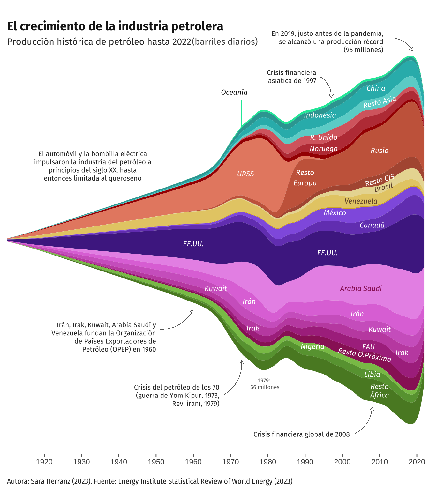
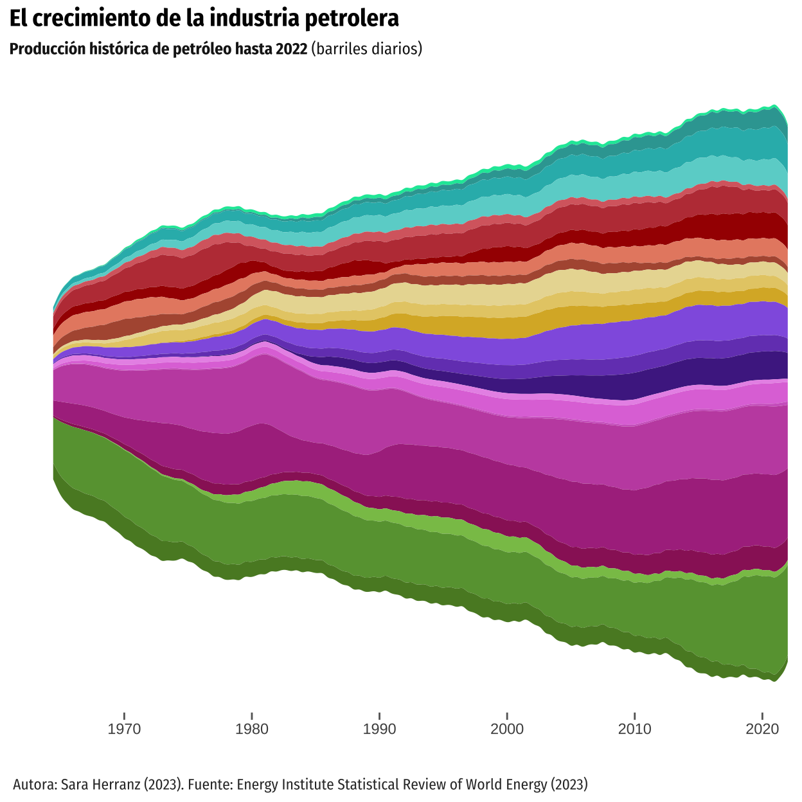

Distill is a publication format for scientific and technical writing, native to the web.
Learn more about using Distill at https://rstudio.github.io/distill.
CLEANING THE DATA
Uploading the data base, deleting unnecessary columns and NAs from the main variable (oilprod_kbd):
First, we start by organizing the countries. We created a vector for the countries that needed to appear explicitly in our graph and then created a new database where all these countries appear. After that, we filtered the original database, but this time we selected the unwanted countries and summed them by region. That way, they would receive the name of the region.
countries <- c("Australia", "China", "Indonesia", "Norway", "Russian Federation", "USSR", "United Kingdom", "Brazil", "Venezuela", "Mexico", "Canada", "US", "Saudi Arabia", "Iran", "Kuwait", "Iraq", "Libya", "United Arab Emirates", "Nigeria", "Other Africa", "Other Asia Pacific", "Other CIS", "Other Caribbean", "Other Eastern Africa", "Other Europe", "Other Middle Africa", "Other Middle East", "Other Northern Africa", "Other S. & Cent. America", "Other South America", "Other Western Africa")
# Filtrar los países de interés
panel_a <- panel |>
group_by(Region, Country) |>
filter(Country %in% countries) |>
mutate(Region = if_else(Country == "Australia", "Oceania", Region)) |>
select(-c(pop, ISO3166_alpha3, ISO3166_numeric, SubRegion, oilprod_mt))
# Filtrar países no interés y sumarlos todos.
panel_b <- panel |>
filter(!Country %in% countries) |>
group_by(Year, Region) |>
summarise(oilprod_kbd = sum(oilprod_kbd), .groups = 'drop') |>
mutate(Country = Region) |>
select(Country, everything()) |>
filter(!is.na(Region)) |>
arrange(Country) We combined both databases in order to work with them. To do so, we changed oilprod_kbd, the main variable, as a character variable so it would not change the data, since we were having some trouble. After that, we create the new data base, panel_c, and change oilprod_kbd into a numeric variable again.
# Combinar los dos df que he creado antes.
# primero convertimos las columnas de oilprod a character para que no me modifique los datos:
as.character(panel_a$oilprod_kbd) [1] "7" "9" "21"
[4] "39" "45" "176"
[7] "315" "337" "424"
[10] "420" "451" "461"
[13] "490" "490" "491"
[16] "460" "449" "443"
[19] "431" "562.76671874178" "655.201179582001"
[22] "588.217449848958" "623.407078837341" "592.689365496342"
[25] "562.355654996113" "647.179383272532" "613.085037860371"
[28] "605.029089885097" "567.785249048035" "609.991305208242"
[31] "578.842858251211" "611.57295672945" "658.270200680928"
[34] "630.098802456398" "612.483625577912" "805.598262245302"
[37] "747.974990892416" "748.868155053645" "654.85008421599"
[40] "574.03450974759" "569.814669284734" "523.563477102737"
[43] "551.802795769316" "545.412212530418" "541.979649668342"
[46] "549.784680352495" "478.887166147434" "472.333350722432"
[49] "400.56023183022" "420.255627602401" "378.478886510335"
[52] "353.223244645968" "322.119242193171" "343.326893791847"
[55] "457.966669671853" "454.452255148924" "443.602172744719"
[58] "420.342756892636" "96.05" "117.05"
[61] "147.05" "161.05" "176.05"
[64] "166.681030680719" "174.845001406353" "171.186290608208"
[67] "173.986204024308" "181.762239631107" "177.414826302901"
[70] "172.330536734984" "166.719998878047" "165.825247303267"
[73] "171.645014909704" "187.77819226041" "220.021009133722"
[76] "267.914672736694" "339.424114790548" "473.727097326595"
[79] "560.960241472043" "591.120780834771" "589.782600199207"
[82] "573.515354872111" "613.198388098951" "650.536001106589"
[85] "643.351566853645" "652.6" "667.4"
[88] "691.7" "714.9" "808.4"
[91] "869.4" "1003.2" "1132.4"
[94] "1276.2" "1339.1" "1497.7"
[97] "1557.8" "1542.8" "1705.57586050616"
[100] "1806.12941292239" "1831.05314803057" "1897.1589040943"
[103] "2029.02755983625" "2136.88173702766" "2178.75744732741"
[106] "2144.84696517092" "2109.93814060015" "2341.37197342432"
[109] "2524.98706781297" "2607.41968993783" "2731.23761284409"
[112] "2690.96166174307" "2889.71518512005" "3030.27080900116"
[115] "2989.58199656729" "3106.80028368063" "920"
[118] "1012" "1106" "1194"
[121] "1306" "1473" "1582"
[124] "1829" "2114" "1993"
[127] "1735" "1598" "1608"
[130] "1597" "1835" "1764"
[133] "1610" "1590" "1661"
[136] "1775" "1812.79521099365" "1805.11746164193"
[139] "1908.7699482158" "2002.41851398741" "1961.45622826868"
[142] "1967.73567110496" "1983.50534326451" "2065.57905982821"
[145] "2189.01030279524" "2281.33478880381" "2402.12781289982"
[148] "2479.91742360248" "2587.59028284439" "2672.38133911372"
[151] "2604.39959497769" "2703.40190236735" "2727.95812580473"
[154] "2858.16410114571" "3003.47079197939" "3079.88144593728"
[157] "3040.8960275232" "3208.38420983492" "3290.18966069301"
[160] "3207.03529755954" "3202.39768859543" "3332.07980024705"
[163] "3514.82206603947" "3740.23767735793" "4000.41096458707"
[166] "4270.5299026444" "4388.13557766783" "4463.63884720887"
[169] "4813.03335135662" "5243.87995911751" "5372.41703226367"
[172] "5130.29640350779" "5413.77417497851" "5575.65991085035"
[175] "227.129589041096" "292.195890410959" "278.740821917808"
[178] "320.236885245902" "436.586849315069" "615.519178082192"
[181] "791.439178082192" "914.64781420765" "1076.60630136986"
[184] "1302.3301369863" "1547.53369863014" "1745.58142076503"
[187] "1880.49643835616" "2089.55205479452" "2131.72465753425"
[190] "2121.89480874317" "2032.71945205479" "2050.79342465753"
[193] "2130.11808219178" "2295.33142076503" "2508.26575342466"
[196] "2624.54164383562" "2693.82520547945" "2744.74453551913"
[199] "2764.11287671233" "2777.56794520548" "2831.38821917808"
[202] "2844.68087431694" "2892.43808219178" "2933.60657534247"
[205] "2992.64821917808" "3174.73114754098" "3215.76136986301"
[208] "3216.76547945206" "3217.56876712329" "3256.84316939891"
[211] "3310.14767123288" "3351.03501369863" "3405.63849315069"
[214] "3485.77549180328" "3641.96371780822" "3710.50022191781"
[217] "3741.67782465753" "3813.99526775956" "3805.37452054794"
[220] "4076.96608219178" "4074.18469863014" "4155.22879781421"
[223] "4216.44262753425" "4245.9577260274" "4308.83506849315"
[226] "3999.15587431694" "3845.86021917808" "3802.04087671233"
[229] "3848.31024657534" "3900.70155737705" "3993.96638356164"
[232] "4111.22630136986" "486" "474"
[235] "510" "599" "642"
[238] "854" "892" "1081"
[241] "1338" "1375" "1306"
[244] "1504" "1685" "1635"
[247] "1590" "1577" "1602"
[250] "1337" "1419" "1505"
[253] "1342" "1429" "1420"
[256] "1373" "1481" "1539"
[259] "1669" "1579" "1588"
[262] "1589" "1578" "1580"
[265] "1557" "1520" "1408"
[268] "1455.57301420765" "1387.03971068493" "1289.45652438356"
[271] "1175.55108767123" "1129.70946338798" "1095.68712328767"
[274] "1017.75856715616" "971.75373490411" "1005.63849945355"
[277] "994.27064" "1003.01758575342" "952.284758356164"
[280] "916.819249180328" "870.988597260274" "846.982391232877"
[283] "837.646557260274" "873.251786098255" "837.303460821918"
[286] "807.564296986301" "780.661123287671" "742.031662295082"
[289] "691.55205479452" "643.703628690563" "1908"
[292] "2132" "2603" "2840"
[295] "3376" "3847.6597260274" "4572.42191780822"
[298] "5058.95737704918" "5907.37589041096" "6060.30136986301"
[301] "5386.61917808219" "5918.1912568306" "5713.95890410959"
[304] "5302.05479452055" "3217.58904109589" "1478.96174863388"
[307] "1321.03123287671" "2396.92438356164" "2453.58465753425"
[310] "2042.53551912568" "2205.20547945205" "2054.23835616438"
[313] "2342.43835616438" "2349.48087431694" "2894.34191780822"
[316] "3270.17808219178" "3499.56164383562" "3523.01639344262"
[319] "3712.16438356164" "3730.02739726027" "3743.77424657534"
[322] "3758.57923497268" "3776.46301369863" "3854.74794520548"
[325] "3603.35616438356" "3850.40329411475" "3824.44999952055"
[328] "3616.92054786301" "4083.60657573973" "4215.80273261749"
[331] "4217.46547939726" "4291.00808230137" "4355.96260286301"
[334] "4414.97814197268" "4284.86460273973" "4420.62047945206"
[337] "4452.40410958904" "3809.75614754098" "3609.2298630137"
[340] "3714.13712328767" "3852.75988493151" "4578.22101038251"
[343] "4854" "4620" "3407"
[346] "3120" "3653" "3822"
[349] "1313" "1392" "1228"
[352] "1503" "1521" "1549"
[355] "1694" "1466" "2018"
[358] "1977.03835616438" "2270.55890410959" "2422.26775956284"
[361] "2358.12054794521" "2573.55068493151" "3488.55068493151"
[364] "2657.51912568306" "906.906849315068" "988.180821917808"
[367] "1105.72876712329" "1227.98360655738" "1425.29205479452"
[370] "1899.41863013699" "2391.27726027397" "2782.15081967213"
[373] "2838.2597260274" "2148.94794520548" "285.356164383562"
[376] "531.261202185792" "455.275616438356" "505.275616438356"
[379] "530.275616438356" "580.261202185792" "1165.82684931507"
[382] "2120.82684931507" "2609.82684931507" "2613"
[385] "2522" "2116" "1344"
[388] "2030" "1833" "1999"
[391] "2143.2118" "2428" "2445.60515068493"
[394] "2468.87661643836" "2773.25520547945" "3078.50273224044"
[397] "3099.47123287671" "3238.6301369863" "3985.96989041096"
[400] "4422.7540863388" "4537.9397661601" "4631.92048105736"
[403] "4779.45210161601" "4113.6749010929" "4102.40272300407"
[406] "4519.66612130779" "2371" "2505"
[409] "2522" "2656" "2819"
[412] "3036" "3253" "3339"
[415] "3080" "2603" "2132"
[418] "2199" "2024" "2182"
[421] "2623" "1757" "1187"
[424] "862" "1117" "1229"
[427] "1127" "1210" "1072"
[430] "1286" "1408" "964"
[433] "185" "1077" "1945"
[436] "2085" "2130" "2129"
[439] "2137" "2232" "2085"
[442] "2244.42256830601" "2183.54369863014" "2026.55109589041"
[445] "2371.2638630137" "2520.21983606557" "2669.24463013699"
[448] "2739.52076712329" "2667.00156555773" "2791.13177595629"
[451] "2502.36701405479" "2564.2120549863" "2917.64520547945"
[454] "3172.78693989071" "3133.56342465753" "3105.85465753425"
[457] "3069.36255616438" "3149.82774262295" "3009.26778082192"
[460] "3049.70861643836" "2976.15615068493" "2721.27458469945"
[463] "2703.57750684932" "3028.4000217514" "1220"
[466] "1508" "1733" "2599"
[469] "3108" "3357" "2750"
[472] "2248" "2211" "1558"
[475] "1514" "1972" "2108"
[478] "2023" "2139" "1862"
[481] "1253" "1176" "1151"
[484] "1022" "1025" "1064"
[487] "1003" "1051" "1164"
[490] "1424" "1439" "1473"
[493] "1402" "1431" "1439"
[496] "1452" "1491" "1480"
[499] "1425" "1474.5902" "1427.7246"
[502] "1374.88047" "1485" "1622.255101"
[505] "1744.687" "1872.14589041096" "1908.23287671233"
[508] "1875.46994535519" "1738.77537123288" "1798.95933287671"
[511] "516.033568493151" "1538.5328" "1047.83565753425"
[514] "517.726" "436.643835616438" "411.775956284153"
[517] "928.945209589041" "1165.20543287671" "1227.83353152173"
[520] "425.356808346441" "1269.3376387605" "1088.37697574537"
[523] "362" "370" "411"
[526] "439" "461" "487"
[529] "486" "506" "525"
[532] "653" "806" "894"
[535] "1085" "1327" "1607"
[538] "2129" "2553" "3001"
[541] "2930" "2942" "2912"
[544] "2758" "2879" "2877"
[547] "2897" "2940.776928768" "3099.631421918"
[550] "3098.273032787" "3115.34489947941" "3135.9556193147"
[553] "3054.76808598921" "3270.05702200502" "3408.62612140012"
[556] "3498.55562350981" "3351.69031376674" "3455.94560846721"
[559] "3568.12804280822" "3592.64832707671" "3794.69958883562"
[562] "3830.18032932787" "3765.62080472055" "3689.12573072603"
[565] "3478.5303843863" "3165.32771242896" "2978.49480151507"
[568] "2959.36647987945" "2940.31337989589" "2911.54434212841"
[571] "2882.02490154521" "2791.50295094521" "2593.043572"
[574] "2460.71367937978" "2227.45063943562" "2071.5804231589"
[577] "1920.52951538356" "1911.59197347541" "1927.64856375068"
[580] "1944.47747431781" "274.2" "417.6"
[583] "319.1" "141.3" "540.3"
[586] "1083.1" "1531.2" "1815.7"
[589] "2054.3" "2255" "1783.2"
[592] "2066.786" "2085.099" "1896.992"
[595] "2301.995" "2058" "1439.6"
[598] "1287" "1235.5" "1388"
[601] "1498.9" "1466.6" "1353"
[604] "1391.349" "1776.3" "1786.701"
[607] "1963.1" "2032" "2018.2"
[610] "1933.877" "1948.594" "1971.067"
[613] "1977.741" "2023.046" "1894.5"
[616] "2174.35445081967" "2157.49730410959" "1951.11082191781"
[619] "2298.78486164384" "2486.55246448087" "2481.98643150685"
[622] "2371.12057808219" "2205.19978767123" "2170.56921311475"
[625] "2209.12860273973" "2530.71070136986" "2458.82858082192"
[628] "2409.25752185792" "2275.52575890411" "2273.46627123288"
[631] "2198.92984109589" "1897.82023497268" "1966.45877534247"
[634] "2003.50326027397" "2099.79384931507" "1826.67217476503"
[637] "1633.55983535301" "1449.92667128822" "6"
[640] "33" "32" "35"
[643] "189" "279" "287"
[646] "356" "407" "528"
[649] "512" "532" "661"
[652] "752" "823" "907"
[655] "1054" "1196" "1567"
[658] "1716" "1955" "2217"
[661] "2377" "2693" "2903"
[664] "3232" "3280" "3138"
[667] "3139" "3331.15411770082" "3402.87603407395"
[670] "3321.5061593004" "3252.99854351279" "3180.91823326772"
[673] "2962.14363356782" "2772.65357264761" "2551.02128639946"
[676] "2466.1585931531" "2349.98902642005" "2139.16797706088"
[679] "2039.57831896138" "1917.43187776654" "1837.67482541598"
[682] "1886.32380603942" "1946.01226613623" "1996.52531986559"
[685] "1971.75870171737" "1851.43808589152" "1762.54519012546"
[688] "2006.18952814714" "2027.66951871378" "1900.62104559858"
[691] "2.13901369863014" "2.13901369863014" "2.05594520547945"
[694] "1.84322404371585" "1.20449315068493" "0.913753424657534"
[697] "0.477643835616438" "0.579890710382514" "0.872219178082192"
[700] "0.519178082191781" "0.415342465753425" "25.186393442623"
[703] "24.2075068493151" "30.844301369863" "54.9951506849315"
[706] "77.5400273224044" "119.132438356164" "149.311643835616"
[709] "163.013643835616" "205.293142076503" "241.475726027397"
[712] "232.711589041096" "218.846794520548" "211.120464480874"
[715] "195.840054794521" "189.852273972603" "175.958164383562"
[718] "163.12306010929" "166.272383561644" "157.146356164384"
[721] "157.170520547945" "171.870464480874" "188.140109589041"
[724] "167.548438356164" "150.512438356164" "145.081256830601"
[727] "136.242602739726" "136.363901369863" "140.257484931507"
[730] "172.671508196721" "177.19656856985" "227.043931874743"
[733] "191.118315719443" "183.727950819672" "181.477376027397"
[736] "148.812005479452" "199.653208219178" "207.713967213115"
[739] "241.82578630137" "246.774695890411" "276.145549072407"
[742] "270.226123675484" "317.226837151104" "315.315953077501"
[745] "347.795107552411" "331.146612358633" "292.972553671442"
[748] "283.131461539912" "35.1139726027397" "34.0854794520548"
[751] "31.0854794520548" "35.1136612021858" "36.427397260274"
[754] "39.5053150684932" "42.4175342465753" "44.2996721311475"
[757] "47.0560273972603" "47.3799601715137" "47.6365587195708"
[760] "62.1463715291235" "72.5619810385792" "72.4158236445413"
[763] "92.6813276927917" "77.5224150431936" "78.4422326703062"
[766] "85.5313066651123" "90.8512676731305" "103.948013397151"
[769] "123.871833171168" "127.078559524523" "121.209703511507"
[772] "125.495896742738" "134.802331263395" "145.163927800068"
[775] "148.917535522066" "205.02265211652" "276.766256740903"
[778] "259.305984636804" "229.463301105651" "244.528224073052"
[781] "224.046582411013" "214.503056433464" "216.561331552152"
[784] "196.241775745701" "191.87016501403" "195.808629536182"
[787] "192.132877863749" "233.785212709204" "284.183266662671"
[790] "303.652873839572" "318.890563023671" "340.169646428447"
[793] "329.865552585336" "314.909308933565" "299.199335056957"
[796] "287.550538678638" "270.340339828643" "292.1021444013"
[799] "293.283021228729" "276.918875789725" "269.079724588456"
[802] "230.009279891274" "227.170375330872" "204.179812045975"
[805] "197.512396658844" "176.62906681556" "52.5095890410959"
[808] "52.3095890410959" "51.2246575342466" "50.2021857923497"
[811] "48.8547945205479" "47.1649315068493" "45.2"
[814] "43.8997267759563" "43.2684931506849" "42.3924931506849"
[817] "41.0384931506849" "39.3377049180328" "38.7129863013699"
[820] "38.5610410958904" "38.7433424657534" "38.6241803278688"
[823] "38.872" "38.752" "38.144"
[826] "37.8363387978142" "37.678" "37.492"
[829] "37.088" "36.6356284153006" "36.47"
[832] "36.2" "35.992" "35.2793442622951"
[835] "35.088" "35.03" "35.5346"
[838] "36.2094679781421" "36.93155859375" "37.87878"
[841] "38.927866" "39.3401636290397" "40.717866"
[844] "42.5167339204451" "1.02493150684932" "1.21931506849315"
[847] "2.04986301369863" "3.48934426229508" "3.64027397260274"
[850] "2.80972602739726" "2.12054794520548" "1.97377049180328"
[853] "2.4386301369863" "3.16876712328767" "4.29369863013699"
[856] "4.54139344262295" "4.82383561643836" "5.78931506849315"
[859] "5.88931506849315" "5.62868852459016" "5.17684931506849"
[862] "10.2601369863014" "14.1120547945205" "15.2696721311475"
[865] "17.2386301369863" "18.0756164383562" "17.2157534246575"
[868] "13.8356557377049" "13.7879452054795" "14.2060273972603"
[871] "15.737397260274" "16.9434426229508" "21.3861643835616"
[874] "24.3372602739726" "27.3943835616438" "27.1114754098361"
[877] "26.7353424657534" "31.3523287671233" "39.7457534246575"
[880] "48.9938524590164" "50.3023287671233" "65.2094657534247"
[883] "66.026602739726" "58.3268527868852" "52.8661888493151"
[886] "52.1473246027397" "52.1350410684932" "53.7234836065574"
[889] "49.0652969863014" "54.2522827260274" "54.0249404931507"
[892] "53.5933666530055" "51.8936855890411" "51.9881616438356"
[895] "50.5409424657534" "46.7939371584699" "45.2100794520548"
[898] "44.1193342465753" "42.4808904109589" "41.3612950819672"
[901] "38.6434083893356" "36.4503234385187" "1.15068493150685"
[904] "1.31898238747554" "1.31928181108509" "1.10371819960861"
[907] "1.01761252446184" "0.911937377690802" "0.765027322404372"
[910] "0.735812133072407" "0.727984344422701" "470.471945205479"
[913] "486.67797260274" "506.991835616438" "517.637677595628"
[916] "530.04495890411" "528.23695890411" "509.311726027397"
[919] "504.314016393443" "509.05495890411" "509.818164383562"
[922] "507.512109589041" "494.072923497268" "481.448356164384"
[925] "489.832054794521" "508.410931506849" "483.815491803279"
[928] "469.98298630137" "492.687260273973" "529.680876712329"
[931] "531.360300546448" "701.148876712329" "705.306273972603"
[934] "683.984246575343" "662.08087431694" "641.885452054795"
[937] "631.909780821918" "636.060465753425" "600.69218579235"
[940] "556.042657534247" "558.739863013699" "531.423369863014"
[943] "502.62456284153" "481.218745205479" "463.419364383562"
[946] "431.909553315068" "419.517207786885" "419.373363479452"
[949] "433.989773534247" "437.618762849315" "429.367411803279"
[952] "408.410202580822" "399.345429315068" "397.571062937255"
[955] "377.630150852445" "356.878585349462" "341.965087407335"
[958] "336.993707492079" "336.748460110558" "344.9905319095"
[961] "340.064742421725" "332.147146535245" "314.134408402068"
[964] "303.884202379261" "308.535676741393" "302.643579555616"
[967] "290.410817996721" "289.084862337534" "229.878224362003"
[970] "25" "23.7506301369863" "30.3458904109589"
[973] "54.6005753424657" "73.9464480874317" "106.729863013699"
[976] "128.305506849315" "136.132767123288" "177.775956284153"
[979] "214.138904109589" "205.830136986301" "195.901589041096"
[982] "193.406967213115" "188.279287671233" "183.768082191781"
[985] "170.91602739726" "159.759289617486" "155.372602739726"
[988] "139.747643835616" "134.273424657534" "139.021448087432"
[991] "151.952739726027" "130.863424657534" "118.515068493151"
[994] "111.070081967213" "106.687671232877" "95.0821917808219"
[997] "92.3315068493151" "116.647540983607" "107.249997260274"
[1000] "111.681775342466" "106.154284931507" "106.719300546448"
[1003] "98.8008520547945" "87.5042246575343" "82.6518356164384"
[1006] "84.4848360655738" "89.3872602739726" "98.2548575342466"
[1009] "118.414652054795" "113.464614754098" "96.6069890410959"
[1012] "92.356498630137" "94.3611430136986" "97.2213666120218"
[1015] "94.7716504613699" "89.7778980821918" "60.9961643835616"
[1018] "65.761095890411" "72.9775342465753" "77.9693989071038"
[1021] "77.9589041095891" "78.5377397260274" "76.2008082191781"
[1024] "70.9298907103825" "68.7463424657534" "67.7620136986302"
[1027] "61.6836575342466" "58.7228142076503" "58.5191095890411"
[1030] "55.4760136986301" "51.3976575342466" "55.3828961748634"
[1033] "54.2938356164384" "52.2115616438356" "50.2272328767123"
[1036] "50.1699590163934" "50.2134109589041" "50.5378767123288"
[1039] "51.692301369863" "52.6613797814208" "52.5322191780822"
[1042] "51.5672054794521" "53.3541780821918" "54.2459836065574"
[1045] "53.189904109589" "52.1174246575343" "52.1781506849315"
[1048] "50.1249180327869" "50.1291780821918" "49.1389726027397"
[1051] "48.1213424657534" "48.1210109289618" "47.1174246575342"
[1054] "48.1291780821918" "48.0978356164384" "48.4539371584699"
[1057] "185.05381369863" "182.216301369863" "193.93337260274"
[1060] "192.60387431694" "192.147315068493" "192.268498630137"
[1063] "201.46901369863" "183.840737704918" "208.472589041096"
[1066] "213.751975342466" "212.752967123288" "214.042081967213"
[1069] "208.007901369863" "206.623328767123" "214.441046575342"
[1072] "202.442076502732" "207.930031710904" "210.49312643937"
[1075] "2.13901369863014" "2.13901369863014" "2.05594520547945"
[1078] "1.84322404371585" "1.20449315068493" "0.913753424657534"
[1081] "0.477643835616438" "0.579890710382514" "0.872219178082192"
[1084] "0.519178082191781" "0.415342465753425" "0.186393442622951"
[1087] "0.456876712328767" "0.49841095890411" "0.394575342465753"
[1090] "0.289945355191257" "0.394575342465753" "0.33227397260274"
[1093] "0.353041095890411" "0.331366120218579" "0.456876712328767"
[1096] "0.477643835616438" "0.373808219178082" "0.414207650273224"
[1099] "0.269972602739726" "0.311506849315068" "0.249205479452055"
[1102] "0.227814207650273" "0.207671232876712" "0.16613698630137"
[1105] "0.103835616438356" "0.103551912568306" "0.353041095890411"
[1108] "0.269972602739726" "0.228438356164384" "0.269234972677596"
[1111] "0.207671232876712" "0.265819178082192" "0.215978082191781"
[1114] "0.225743169398907" "0.149523287671233" "0.226361643835616"
[1117] "0.222208219178082" "0.17603825136612" "0.16613698630137"
[1120] "0.19521095890411" "0.170290410958904" "0.151185792349727"
[1123] "0.1516" "0.110065753424658" "0.103794082191781"
[1126] "0.100439142076503" "0.0891324931506849" "0.0936306520547945"
[1129] "0.0726039397260274" "0.132715651912568" "0.0895460789440764"
[1132] "0.0730144920446429" "47.1345205479452" "54.411095890411"
[1135] "78.2142465753425" "84.5713114754098" "83.8046575342466"
[1138] "63.9467123287671" "80.3846575342466" "89.2371584699454"
[1141] "89.738904109589" "85.5961643835616" "77.88"
[1144] "77.6461202185792" "68.0136164383562" "65.8723287671233"
[1147] "66.2547397260274" "80.0556557377049" "87.1041917808219"
[1150] "99.3775890410959" "97.913698630137" "94.6876229508197"
[1153] "91.1598356164384" "88.8238630136986" "85.6484657534247"
[1156] "77.0825956284153" "76.1854246575343" "77.2546575342466"
[1159] "77.1881369863014" "76.0228415300546" "82.5295068493151"
[1162] "89.5005479452055" "96.4025205479452" "101.755901639344"
[1165] "107.613945205479" "124.930876712329" "123.531616438356"
[1168] "125.520491803279" "133.608739726027" "149.107054794521"
[1171] "149.24101369863" "143.405319132484" "143.098261706354"
[1174] "138.686510919755" "148.377479952391" "143.110649875044"
[1177] "135.674418477587" "144.24780377705" "144.325219295413"
[1180] "147.811945690858" "152.025239076056" "153.615691166752"
[1183] "145.909028126249" "135.225446687141" "133.300343760837"
[1186] "127.810696093523" "122.344961574809" "186.740594866203"
[1189] "225.880868735069" "380.647658345019" "46.1095890410959"
[1192] "53.1917808219178" "76.1643835616438" "81.0819672131148"
[1195] "80.1643835616438" "61.1369863013699" "78.2641095890411"
[1198] "87.2633879781421" "87.3002739726027" "82.427397260274"
[1201] "73.586301369863" "72.8699453551912" "63.0630136986301"
[1204] "59.5397260273973" "58.9528767123288" "70.6885245901639"
[1207] "78.1605479452055" "83.3767123287671" "77.4632876712329"
[1210] "75.1377049180328" "70.5890410958904" "66.3838356164383"
[1213] "64.9194520547945" "60.0322404371585" "58.8117808219178"
[1216] "59.1550684931507" "57.792602739726" "53.5530054644809"
[1219] "54.7687671232877" "58.1005479452055" "59.6454794520548"
[1222] "60.0879781420765" "61.3383561643836" "68.2794520547945"
[1225] "60.5331506849315" "55.8478142076503" "62.2268493150685"
[1228] "59.2323287671233" "58.4767123287671" "64.9032628483313"
[1231] "71.7659196241622" "68.2214411389333" "78.0340412126651"
[1234] "71.8526864324209" "68.6909575460799" "73.8932233523923"
[1237] "75.4990365282896" "80.7967192837545" "87.7249719527686"
[1240] "89.4848224270254" "83.8829629481665" "78.2274360040805"
[1243] "77.4623370211108" "73.6505220661258" "69.5454485338444"
[1246] "137.034238722954" "179.621867052211" "336.693532391113"
[1249] "0" "0" "0"
[1252] "0" "0" "0"
[1255] "0" "0" "0"
[1258] "0" "0" "0"
[1261] "0" "0" "0"
[1264] "3.30363387978142" "12.008" "20.6738630136986"
[1267] "26.5278356164384" "27.1858196721312" "26.8799452054795"
[1270] "26.4038082191781" "22.571397260274" "17.2992896174863"
[1273] "7.29079452054795" "5.77268493150685" "4.79293150684931"
[1276] "3.13595628415301" "2.82635616438356" "8.35586301369863"
[1279] "14.1138082191781" "24.4585792349727" "20.7247397260274"
[1282] "16.4506575342466" "15.7456438356164" "14"
[1285] "13" "23" "30"
[1288] "30" "46.1671" "97.8767123287671"
[1291] "68.978904109589" "63.1366120218579" "67.9301369863014"
[1294] "51.5235287671233" "109.707794520548" "119.526032786885"
[1297] "145.711583561644" "142.601553424658" "151.10264109589"
[1300] "150.573887978142" "215.146597260274" "218.024211150685"
[1303] "249.014423278516" "229.922502753221" "194.43954506815"
[1306] "189.713564575" "10862.5916712329" "11246.8816438356"
[1309] "11416.3334246575" "11372.7553551913" "11070.064109589"
[1312] "10342.4431232877" "9263.696" "7978.18633879781"
[1315] "7118.8562739726" "6370.72471232877" "6235.77693150685"
[1318] "6061.59196721311" "6170.67484931507" "6109.99824657534"
[1321] "6118.78005479452" "6582.83788114754" "7105.85949726027"
[1324] "7754.79085561644" "8602.47518750685" "9335.08157879782"
[1327] "9597.65515828311" "9833.50972878378" "10057.1407865897"
[1330] "9964.51239601623" "10152.2604393879" "10378.6199400859"
[1333] "10533.3635028731" "10655.7334924749" "10806.8398897714"
[1336] "10927.10223545" "11086.7963055872" "11342.060917541"
[1339] "11373.6759211872" "11562.4261274356" "11679.0002890027"
[1342] "10665.7891961818" "10999.816988487" "11202.3724454764"
[1345] "2219.3" "2617.8" "2825"
[1348] "3080.9" "3262.2" "3851.1"
[1351] "4820.9" "6070.3" "7693.2"
[1354] "8617.7" "7216.4" "8762.174"
[1357] "9418.905" "8554.082" "9841.627"
[1360] "10269.5" "10256" "6961"
[1363] "4951.41" "4534.081" "3600.955"
[1366] "5208.2" "4450.15" "5656.147"
[1369] "5635.5" "7105.5" "8819.8"
[1372] "9091.7" "8892.7" "8983"
[1375] "8973.53751984331" "9086.50302446128" "9005.31611888488"
[1378] "9266.78665333941" "8523.81035196955" "9121.1653325"
[1381] "8935.03031557692" "8206.50031557692" "9628.15997634615"
[1384] "10305.9112243654" "10838.5813952115" "10670.7816991923"
[1387] "10268.7530601923" "10664.7944119231" "9708.90310653846"
[1390] "9864.82675685459" "11079.2287862496" "11621.794282988"
[1393] "11392.9266346927" "11518.8227243244" "11997.9379844437"
[1396] "12406.0476076609" "11892.1982617072" "12261.333341747"
[1399] "11832.3192427766" "11038.9513339977" "10953.7626799514"
[1402] "12136.3904404421" "9014.148" "9579.241"
[1405] "10219.252" "10599.743" "10827.674"
[1408] "11296.849" "11155.778" "11184.896"
[1411] "10945.953" "10461.205" "10007.737"
[1414] "9735.639" "9862.562" "10274.441"
[1417] "10135.534" "10169.626" "10180.573"
[1420] "10198.534" "10246.668" "10508.951"
[1423] "10580.378" "10231.142" "9943.978"
[1426] "9764.689" "9159.077" "8914.307"
[1429] "9075.545" "8868.125" "8582.665"
[1432] "8388.579" "8321.639" "8294.527"
[1435] "8268.592" "8010.833" "7731.458"
[1438] "7732.65864480874" "7669.60921917808" "7624.3382739726"
[1441] "7368.44794520548" "7250.24395628415" "6900.78364383562"
[1444] "6824.85852054794" "6856.69178082192" "6783.35406010929"
[1447] "7266.70695890411" "7558.50310958904" "7890.3165890411"
[1450] "8931.9185409836" "10103.119" "11807.9703424658"
[1453] "12783.8650136986" "12356.8041693989" "13142.2716575342"
[1456] "15322.8227123288" "17139.3947260274" "16492.4419016393"
[1459] "16678.5282328767" "17770.0575370218" "4857.76"
[1462] "5302" "5762" "6167.10382513661"
[1465] "6566" "7126.74630136986" "7610.45917808219"
[1468] "8064.12841530055" "8664.42191780822" "9270.40547945205"
[1471] "9915.98438356164" "10465.5959016393" "11009.9142465753"
[1474] "11530.7542465753" "11805.4246575342" "12116.4144808743"
[1477] "12260.2528767123" "12329.7854794521" "12403.4342465753"
[1480] "12296.6770491803" "282.2" "360"
[1483] "382.1" "496.6" "627.8"
[1486] "779.6" "1059.5" "1202.7"
[1489] "1532.6" "1678.6" "1663.8"
[1492] "1936.402" "1998.71" "1830.501"
[1495] "1830.69" "1734.891" "1540.3"
[1498] "1361.8" "1293.022" "1246.021"
[1501] "1211.146" "1412.55" "1471.287"
[1504] "1544.474" "1819.001" "1984.628"
[1507] "2274.408" "2494.67" "2438.286"
[1510] "2462.533" "2444" "2501.3"
[1513] "2521.7" "2610.1" "2413.8"
[1516] "2598.898" "2540.722" "2366.26"
[1519] "2722.489" "2821.58" "2945.463"
[1522] "3134.512" "3094.295" "3113.094"
[1525] "2783.414" "2914.636" "3274.958"
[1528] "3394.11543661202" "3539.99736561644" "3592.48855424658"
[1531] "3875.77823021859" "4019.91622554645" "3879.59664369863"
[1534] "3893.68346479452" "3983.79252287671" "3679.45730316969"
[1537] "3640.44311568415" "4019.9125003964" "1.73983561643836"
[1540] "1.61556164383562" "1.84339726027397" "1.73508196721312"
[1543] "1.7921095890411" "3.51912328767123" "4.89994520547945"
[1546] "7.86196721311475" "8.82542465753425" "9.76241095890411"
[1549] "33.859397260274" "254.432240437158" "798.633424657534"
[1552] "1127.27923287671" "1623.39879452055" "1676.13857923497"
[1555] "1867.71112328767" "2166.71660273973" "2422.07375342466"
[1558] "2652.12775956284" "2695.42235616438" "2690.98761643836"
[1561] "2612.3218630137" "2413.90109289617" "1943.2941369863"
[1564] "1932.80964383562" "1933.55539726027" "1995.89245901639"
[1567] "2134.83671232877" "2694.4375890411" "2769.1562739726"
[1570] "2755.09781420765" "2721.44920547945" "2848.7264109589"
[1573] "2949.54235616438" "2709.81500983607" "2513.55775260274"
[1576] "2499.75463589041" "2291.13050931507" "2059.27222240437"
[1579] "1837.77498410959" "1661.62898657534" "1654.65302520548"
[1582] "1554.36239726776" "1473.87827616438" "1358.15994958904"
[1585] "1113.79156958904" "947.26136010929" "865.343677808219"
[1588] "853.554110958904" "963.528767945205" "1014.80804246448"
[1591] "1005.42504380548" "1091.76116099726" "1118.06512472416"
[1594] "1048.72247595628" "874.116813972603" "777.55143119583"
[1597] "3503" "3402" "3576"
[1600] "3639" "3631" "3754"
[1603] "3615" "3301" "3455"
[1606] "3060" "2422" "2371"
[1609] "2314" "2227" "2425"
[1612] "2228" "2163" "1954"
[1615] "1852" "1853" "1744"
[1618] "1886" "1910" "1998"
[1621] "2012" "2244" "2501"
[1624] "2499" "2592" "2752"
[1627] "2959" "3137" "3321.123"
[1630] "3447.309" "3095.06" "3111.63276256831"
[1633] "3174.43104185048" "2975.08735219178" "2868.56148712329"
[1636] "3305.89981754359" "3302.10767534247" "3339.6854109589"
[1639] "3237.07061643836" "3228.17469945355" "3037.83591780822"
[1642] "2841.57202739726" "2755.02108219178" "2703.73419125683"
[1645] "2680.35616438356" "2692.49315068493" "2863.871"
[1648] "2565.503" "2207.38689018129" "1641.27824174717"
[1651] "1037.32393440324" "660.200407977974" "675.816210391517"
[1654] "730.696502137056" as.character(panel_b$oilprod_kbd) [1] "735.963506849315" "914.540904109589" "1079.30687671233"
[4] "1264.63480874317" "1437.63945205479" "1672.27723287671"
[7] "1412.47942465753" "1647.82871584699" "1734.04909589041"
[10] "1703.49545205479" "1770.33230136986" "1964.50560655738"
[13] "2122.82665753425" "2238.38926027397" "2304.80601369863"
[16] "2221.8572568306" "2149.31564383562" "2173.36082191781"
[19] "2295.40156164384" "2548.44081967213" "2603.40565753425"
[22] "2607.3594109589" "2823.96017808219" "2971.20721311475"
[25] "3078.05309589041" "3266.09605479452" "3333.44356164384"
[28] "3350.63822404372" "3368.77821917808" "3422.62136986301"
[31] "3505.48465753425" "3669.60778688525" "3808.74745205479"
[34] "3823.31326027397" "3829.86187671233" "3989.00570218579"
[37] "4018.27320273973" "4343.50621643836" "4554.84467123973"
[40] "5106.29736560109" "5366.86185139726" "5522.32138038356"
[43] "5912.23793118813" "6059.31056235197" "5783.30470909687"
[46] "5744.88737822937" "5341.55991637298" "5115.18863574933"
[49] "5047.13460597755" "5180.05740155797" "5211.37081114574"
[52] "4996.47863949532" "4908.68955562566" "4782.79661134955"
[55] "4685.88260881269" "4353.39356172613" "4102.3338969534"
[58] "4221.78430212716" "143.344273972603" "192.868246575342"
[61] "221.91098630137" "246.418278688525" "271.696410958904"
[64] "294.470602739726" "346.227534246575" "426.690409836066"
[67] "470.495726027397" "433.519726027397" "455.879424657534"
[70] "562.148278688525" "620.117945205479" "688.522273972603"
[73] "807.870328767123" "709.372868852459" "745.093835616438"
[76] "900.686904109589" "1102.71709589041" "1224.75926229508"
[79] "1288.38493150685" "1370.99842520548" "1338.51148712329"
[82] "1427.01370928962" "1537.32192547945" "1603.05716273973"
[85] "1640.22959780822" "1648.6192579235" "1624.89471232877"
[88] "1749.84157260274" "1892.14427123288" "1891.04873333333"
[91] "1944.69025150685" "1985.70554794521" "2040.54827671233"
[94] "2165.48752553298" "2191.69395377358" "2279.14885292198"
[97] "2360.87711334333" "2432.50110043778" "2399.46077793244"
[100] "2382.81324724627" "2390.83662287695" "2400.45851175056"
[103] "2418.48005417547" "2511.68933047501" "2506.85326954091"
[106] "2565.18928967552" "2495.20858010274" "2478.78938934192"
[109] "2559.33669994056" "2548.27164383143" "2499.62755578214"
[112] "2449.38387170003" "2355.27735127461" "2154.42116801634"
[115] "2046.82626624226" "1920.89159179298" "955.117808219178"
[118] "969.374520547945" "1008.43917808219" "1005.5237704918"
[121] "1012.11369863014" "1013.59123287671" "1010.23838356164"
[124] "984.589098360656" "899.933123287671" "850.169863013699"
[127] "891.663835616438" "939.609972677596" "1029.04073972603"
[130] "1109.278" "1267.86624657534" "1327.49972677596"
[133] "1451.08097260274" "1618.60401369863" "1715.60029315069"
[136] "1881.69461202186" "2051.31502739726" "2331.28531232877"
[139] "2606.46838082192" "2719.52780327869" "2951.67701986301"
[142] "3025.35301082192" "2930.2322330137" "2860.53357377049"
[145] "2932.93216520548" "2887.60413315069" "2853.17573931507"
[148] "2802.26528306011" "2935.6136560274" "3018.1062130137"
[151] "2999.1130730137" "2790.66826492797" "2836.35960244392"
[154] "2761.33809348949" "313.542191780822" "310.079046575343"
[157] "315.400997260274" "314.283234972678" "314.950167123288"
[160] "315.683602739726" "320.881668493151" "325.89062295082"
[163] "330.288991780822" "333.401528767123" "341.188764383562"
[166] "344.930158469945" "349.643635616438" "332.885364383562"
[169] "308.88817260274" "291.613846994536" "299.586246575342"
[172] "326.395843835616" "342.219128767123" "343.190683060109"
[175] "345.313063013699" "350.696852054795" "385.458882191781"
[178] "401.67281147541" "409.234279452055" "387.05755890411"
[181] "377.936693150685" "392.010385245902" "408.651534246575"
[184] "432.016117808219" "439.668005479452" "463.300901639344"
[187] "494.325291405479" "491.413428449315" "536.185822654794"
[190] "589.646737568306" "563.907756849315" "613.642030821918"
[193] "607.439442931507" "622.442362431694" "621.105658117808"
[196] "570.726262208219" "532.733198594822" "494.506814825836"
[199] "453.457669180137" "444.930750282192" "423.163888239726"
[202] "398.947591570355" "378.286699548784" "370.793098629912"
[205] "354.76156245951" "298.790974100989" "300.135267336986"
[208] "287.653877926849" "266.517881867123" "255.914472672107"
[211] "236.554316798921" "223.289782048255" "233"
[214] "291" "381" "602"
[217] "736" "780" "830"
[220] "881" "974" "937"
[223] "970" "1055" "958"
[226] "977" "968" "918.534426229508"
[229] "915.109589041096" "837.524931506849" "867.598904109589"
[232] "934.016393442623" "976.683287671233" "1129.69753424658"
[235] "1159.73863013699" "1423.61857923497" "1573.08767123288"
[238] "1717.54301369863" "1804.57315068493" "1941.65245901639"
[241] "2020.70575342466" "2179.2295890411" "2276.64109589041"
[244] "2407.89398907104" "2553.28876712329" "2562.7598630137"
[247] "2611.91383561644" "2815.56807866557" "2877.44057353245"
[250] "2832.88117884983" "2869.44315623334" "2768.99391772226"
[253] "2790.99663609271" "2783.05364118461" "2717.92640149735"
[256] "2910.86170601093" "2936.98784657534" "3186.28564794521"
[259] "3282.51810410959" "3187.6516464641" "3132.16589751846"
[262] "3021.17715370291" "2915.48821756475" "2918.25237150519"
[265] "2849.67333570582" "2895.03936937686" "2835.86573098512"
[268] "2784.78668555471" "2885.80009346238" "3005.83355355396"
[271] "687.67397260274" "717.864109589041" "769.631232876712"
[274] "797.158469945355" "811.53205479452" "844.437260273973"
[277] "852.420273972603" "932.71693989071" "1073.22739726027"
[280] "1041.48602739726" "1020.12657534247" "1038.42896174863"
[283] "1090.86849315069" "1189.08438356164" "1238.93284383562"
[286] "1250.67120218579" "1254.88765753425" "1250.14208767123"
[289] "1249.28030410959" "1298.08824863388" "1325.25410684932"
[292] "1417.90278630137" "1343.04918082192" "1463.50490710383"
[295] "1465.68794520548" "1535.31424657534" "1527.40136986301"
[298] "1617.43852459016" "1702.14438356164" "1812.80054794521"
[301] "2008.67808219178" "2112.7693989071" "2196.66879726027"
[304] "2300.41966575342" "2303.40166040923" "2176.45116081102"
[307] "2167.15091876989" "2128.31397368829" "2129.38073284874"
[310] "2175.61090658597" "2186.59594627538" "2205.56518964388"
[313] "2129.81861831748" "2167.86432875759" "2194.1265279915"
[316] "2296.37069863133" "2377.48698868224" "2379.57617222293"
[319] "2468.52333202279" "2473.86725041127" "2456.72821826532"
[322] "2281.28437322494" "2210.4943666177" "2200.00584765782"
[325] "2263.45862460031" "2068.870433997" "2041.39094169712"
[328] "2142.91885036122" # luego ya hacemos el nuevo data frame:
panel_c <- bind_rows(panel_a, panel_b)
# convierto oilprod a numérica:
as.numeric(panel_c$oilprod_kbd) [1] 7.000000e+00 9.000000e+00 2.100000e+01 3.900000e+01
[5] 4.500000e+01 1.760000e+02 3.150000e+02 3.370000e+02
[9] 4.240000e+02 4.200000e+02 4.510000e+02 4.610000e+02
[13] 4.900000e+02 4.900000e+02 4.910000e+02 4.600000e+02
[17] 4.490000e+02 4.430000e+02 4.310000e+02 5.627667e+02
[21] 6.552012e+02 5.882174e+02 6.234071e+02 5.926894e+02
[25] 5.623557e+02 6.471794e+02 6.130850e+02 6.050291e+02
[29] 5.677852e+02 6.099913e+02 5.788429e+02 6.115730e+02
[33] 6.582702e+02 6.300988e+02 6.124836e+02 8.055983e+02
[37] 7.479750e+02 7.488682e+02 6.548501e+02 5.740345e+02
[41] 5.698147e+02 5.235635e+02 5.518028e+02 5.454122e+02
[45] 5.419796e+02 5.497847e+02 4.788872e+02 4.723334e+02
[49] 4.005602e+02 4.202556e+02 3.784789e+02 3.532232e+02
[53] 3.221192e+02 3.433269e+02 4.579667e+02 4.544523e+02
[57] 4.436022e+02 4.203428e+02 9.605000e+01 1.170500e+02
[61] 1.470500e+02 1.610500e+02 1.760500e+02 1.666810e+02
[65] 1.748450e+02 1.711863e+02 1.739862e+02 1.817622e+02
[69] 1.774148e+02 1.723305e+02 1.667200e+02 1.658252e+02
[73] 1.716450e+02 1.877782e+02 2.200210e+02 2.679147e+02
[77] 3.394241e+02 4.737271e+02 5.609602e+02 5.911208e+02
[81] 5.897826e+02 5.735154e+02 6.131984e+02 6.505360e+02
[85] 6.433516e+02 6.526000e+02 6.674000e+02 6.917000e+02
[89] 7.149000e+02 8.084000e+02 8.694000e+02 1.003200e+03
[93] 1.132400e+03 1.276200e+03 1.339100e+03 1.497700e+03
[97] 1.557800e+03 1.542800e+03 1.705576e+03 1.806129e+03
[101] 1.831053e+03 1.897159e+03 2.029028e+03 2.136882e+03
[105] 2.178757e+03 2.144847e+03 2.109938e+03 2.341372e+03
[109] 2.524987e+03 2.607420e+03 2.731238e+03 2.690962e+03
[113] 2.889715e+03 3.030271e+03 2.989582e+03 3.106800e+03
[117] 9.200000e+02 1.012000e+03 1.106000e+03 1.194000e+03
[121] 1.306000e+03 1.473000e+03 1.582000e+03 1.829000e+03
[125] 2.114000e+03 1.993000e+03 1.735000e+03 1.598000e+03
[129] 1.608000e+03 1.597000e+03 1.835000e+03 1.764000e+03
[133] 1.610000e+03 1.590000e+03 1.661000e+03 1.775000e+03
[137] 1.812795e+03 1.805117e+03 1.908770e+03 2.002419e+03
[141] 1.961456e+03 1.967736e+03 1.983505e+03 2.065579e+03
[145] 2.189010e+03 2.281335e+03 2.402128e+03 2.479917e+03
[149] 2.587590e+03 2.672381e+03 2.604400e+03 2.703402e+03
[153] 2.727958e+03 2.858164e+03 3.003471e+03 3.079881e+03
[157] 3.040896e+03 3.208384e+03 3.290190e+03 3.207035e+03
[161] 3.202398e+03 3.332080e+03 3.514822e+03 3.740238e+03
[165] 4.000411e+03 4.270530e+03 4.388136e+03 4.463639e+03
[169] 4.813033e+03 5.243880e+03 5.372417e+03 5.130296e+03
[173] 5.413774e+03 5.575660e+03 2.271296e+02 2.921959e+02
[177] 2.787408e+02 3.202369e+02 4.365868e+02 6.155192e+02
[181] 7.914392e+02 9.146478e+02 1.076606e+03 1.302330e+03
[185] 1.547534e+03 1.745581e+03 1.880496e+03 2.089552e+03
[189] 2.131725e+03 2.121895e+03 2.032719e+03 2.050793e+03
[193] 2.130118e+03 2.295331e+03 2.508266e+03 2.624542e+03
[197] 2.693825e+03 2.744745e+03 2.764113e+03 2.777568e+03
[201] 2.831388e+03 2.844681e+03 2.892438e+03 2.933607e+03
[205] 2.992648e+03 3.174731e+03 3.215761e+03 3.216765e+03
[209] 3.217569e+03 3.256843e+03 3.310148e+03 3.351035e+03
[213] 3.405638e+03 3.485775e+03 3.641964e+03 3.710500e+03
[217] 3.741678e+03 3.813995e+03 3.805375e+03 4.076966e+03
[221] 4.074185e+03 4.155229e+03 4.216443e+03 4.245958e+03
[225] 4.308835e+03 3.999156e+03 3.845860e+03 3.802041e+03
[229] 3.848310e+03 3.900702e+03 3.993966e+03 4.111226e+03
[233] 4.860000e+02 4.740000e+02 5.100000e+02 5.990000e+02
[237] 6.420000e+02 8.540000e+02 8.920000e+02 1.081000e+03
[241] 1.338000e+03 1.375000e+03 1.306000e+03 1.504000e+03
[245] 1.685000e+03 1.635000e+03 1.590000e+03 1.577000e+03
[249] 1.602000e+03 1.337000e+03 1.419000e+03 1.505000e+03
[253] 1.342000e+03 1.429000e+03 1.420000e+03 1.373000e+03
[257] 1.481000e+03 1.539000e+03 1.669000e+03 1.579000e+03
[261] 1.588000e+03 1.589000e+03 1.578000e+03 1.580000e+03
[265] 1.557000e+03 1.520000e+03 1.408000e+03 1.455573e+03
[269] 1.387040e+03 1.289457e+03 1.175551e+03 1.129709e+03
[273] 1.095687e+03 1.017759e+03 9.717537e+02 1.005638e+03
[277] 9.942706e+02 1.003018e+03 9.522848e+02 9.168192e+02
[281] 8.709886e+02 8.469824e+02 8.376466e+02 8.732518e+02
[285] 8.373035e+02 8.075643e+02 7.806611e+02 7.420317e+02
[289] 6.915521e+02 6.437036e+02 1.908000e+03 2.132000e+03
[293] 2.603000e+03 2.840000e+03 3.376000e+03 3.847660e+03
[297] 4.572422e+03 5.058957e+03 5.907376e+03 6.060301e+03
[301] 5.386619e+03 5.918191e+03 5.713959e+03 5.302055e+03
[305] 3.217589e+03 1.478962e+03 1.321031e+03 2.396924e+03
[309] 2.453585e+03 2.042536e+03 2.205205e+03 2.054238e+03
[313] 2.342438e+03 2.349481e+03 2.894342e+03 3.270178e+03
[317] 3.499562e+03 3.523016e+03 3.712164e+03 3.730027e+03
[321] 3.743774e+03 3.758579e+03 3.776463e+03 3.854748e+03
[325] 3.603356e+03 3.850403e+03 3.824450e+03 3.616921e+03
[329] 4.083607e+03 4.215803e+03 4.217465e+03 4.291008e+03
[333] 4.355963e+03 4.414978e+03 4.284865e+03 4.420620e+03
[337] 4.452404e+03 3.809756e+03 3.609230e+03 3.714137e+03
[341] 3.852760e+03 4.578221e+03 4.854000e+03 4.620000e+03
[345] 3.407000e+03 3.120000e+03 3.653000e+03 3.822000e+03
[349] 1.313000e+03 1.392000e+03 1.228000e+03 1.503000e+03
[353] 1.521000e+03 1.549000e+03 1.694000e+03 1.466000e+03
[357] 2.018000e+03 1.977038e+03 2.270559e+03 2.422268e+03
[361] 2.358121e+03 2.573551e+03 3.488551e+03 2.657519e+03
[365] 9.069068e+02 9.881808e+02 1.105729e+03 1.227984e+03
[369] 1.425292e+03 1.899419e+03 2.391277e+03 2.782151e+03
[373] 2.838260e+03 2.148948e+03 2.853562e+02 5.312612e+02
[377] 4.552756e+02 5.052756e+02 5.302756e+02 5.802612e+02
[381] 1.165827e+03 2.120827e+03 2.609827e+03 2.613000e+03
[385] 2.522000e+03 2.116000e+03 1.344000e+03 2.030000e+03
[389] 1.833000e+03 1.999000e+03 2.143212e+03 2.428000e+03
[393] 2.445605e+03 2.468877e+03 2.773255e+03 3.078503e+03
[397] 3.099471e+03 3.238630e+03 3.985970e+03 4.422754e+03
[401] 4.537940e+03 4.631920e+03 4.779452e+03 4.113675e+03
[405] 4.102403e+03 4.519666e+03 2.371000e+03 2.505000e+03
[409] 2.522000e+03 2.656000e+03 2.819000e+03 3.036000e+03
[413] 3.253000e+03 3.339000e+03 3.080000e+03 2.603000e+03
[417] 2.132000e+03 2.199000e+03 2.024000e+03 2.182000e+03
[421] 2.623000e+03 1.757000e+03 1.187000e+03 8.620000e+02
[425] 1.117000e+03 1.229000e+03 1.127000e+03 1.210000e+03
[429] 1.072000e+03 1.286000e+03 1.408000e+03 9.640000e+02
[433] 1.850000e+02 1.077000e+03 1.945000e+03 2.085000e+03
[437] 2.130000e+03 2.129000e+03 2.137000e+03 2.232000e+03
[441] 2.085000e+03 2.244423e+03 2.183544e+03 2.026551e+03
[445] 2.371264e+03 2.520220e+03 2.669245e+03 2.739521e+03
[449] 2.667002e+03 2.791132e+03 2.502367e+03 2.564212e+03
[453] 2.917645e+03 3.172787e+03 3.133563e+03 3.105855e+03
[457] 3.069363e+03 3.149828e+03 3.009268e+03 3.049709e+03
[461] 2.976156e+03 2.721275e+03 2.703578e+03 3.028400e+03
[465] 1.220000e+03 1.508000e+03 1.733000e+03 2.599000e+03
[469] 3.108000e+03 3.357000e+03 2.750000e+03 2.248000e+03
[473] 2.211000e+03 1.558000e+03 1.514000e+03 1.972000e+03
[477] 2.108000e+03 2.023000e+03 2.139000e+03 1.862000e+03
[481] 1.253000e+03 1.176000e+03 1.151000e+03 1.022000e+03
[485] 1.025000e+03 1.064000e+03 1.003000e+03 1.051000e+03
[489] 1.164000e+03 1.424000e+03 1.439000e+03 1.473000e+03
[493] 1.402000e+03 1.431000e+03 1.439000e+03 1.452000e+03
[497] 1.491000e+03 1.480000e+03 1.425000e+03 1.474590e+03
[501] 1.427725e+03 1.374880e+03 1.485000e+03 1.622255e+03
[505] 1.744687e+03 1.872146e+03 1.908233e+03 1.875470e+03
[509] 1.738775e+03 1.798959e+03 5.160336e+02 1.538533e+03
[513] 1.047836e+03 5.177260e+02 4.366438e+02 4.117760e+02
[517] 9.289452e+02 1.165205e+03 1.227834e+03 4.253568e+02
[521] 1.269338e+03 1.088377e+03 3.620000e+02 3.700000e+02
[525] 4.110000e+02 4.390000e+02 4.610000e+02 4.870000e+02
[529] 4.860000e+02 5.060000e+02 5.250000e+02 6.530000e+02
[533] 8.060000e+02 8.940000e+02 1.085000e+03 1.327000e+03
[537] 1.607000e+03 2.129000e+03 2.553000e+03 3.001000e+03
[541] 2.930000e+03 2.942000e+03 2.912000e+03 2.758000e+03
[545] 2.879000e+03 2.877000e+03 2.897000e+03 2.940777e+03
[549] 3.099631e+03 3.098273e+03 3.115345e+03 3.135956e+03
[553] 3.054768e+03 3.270057e+03 3.408626e+03 3.498556e+03
[557] 3.351690e+03 3.455946e+03 3.568128e+03 3.592648e+03
[561] 3.794700e+03 3.830180e+03 3.765621e+03 3.689126e+03
[565] 3.478530e+03 3.165328e+03 2.978495e+03 2.959366e+03
[569] 2.940313e+03 2.911544e+03 2.882025e+03 2.791503e+03
[573] 2.593044e+03 2.460714e+03 2.227451e+03 2.071580e+03
[577] 1.920530e+03 1.911592e+03 1.927649e+03 1.944477e+03
[581] 2.742000e+02 4.176000e+02 3.191000e+02 1.413000e+02
[585] 5.403000e+02 1.083100e+03 1.531200e+03 1.815700e+03
[589] 2.054300e+03 2.255000e+03 1.783200e+03 2.066786e+03
[593] 2.085099e+03 1.896992e+03 2.301995e+03 2.058000e+03
[597] 1.439600e+03 1.287000e+03 1.235500e+03 1.388000e+03
[601] 1.498900e+03 1.466600e+03 1.353000e+03 1.391349e+03
[605] 1.776300e+03 1.786701e+03 1.963100e+03 2.032000e+03
[609] 2.018200e+03 1.933877e+03 1.948594e+03 1.971067e+03
[613] 1.977741e+03 2.023046e+03 1.894500e+03 2.174354e+03
[617] 2.157497e+03 1.951111e+03 2.298785e+03 2.486552e+03
[621] 2.481986e+03 2.371121e+03 2.205200e+03 2.170569e+03
[625] 2.209129e+03 2.530711e+03 2.458829e+03 2.409258e+03
[629] 2.275526e+03 2.273466e+03 2.198930e+03 1.897820e+03
[633] 1.966459e+03 2.003503e+03 2.099794e+03 1.826672e+03
[637] 1.633560e+03 1.449927e+03 6.000000e+00 3.300000e+01
[641] 3.200000e+01 3.500000e+01 1.890000e+02 2.790000e+02
[645] 2.870000e+02 3.560000e+02 4.070000e+02 5.280000e+02
[649] 5.120000e+02 5.320000e+02 6.610000e+02 7.520000e+02
[653] 8.230000e+02 9.070000e+02 1.054000e+03 1.196000e+03
[657] 1.567000e+03 1.716000e+03 1.955000e+03 2.217000e+03
[661] 2.377000e+03 2.693000e+03 2.903000e+03 3.232000e+03
[665] 3.280000e+03 3.138000e+03 3.139000e+03 3.331154e+03
[669] 3.402876e+03 3.321506e+03 3.252999e+03 3.180918e+03
[673] 2.962144e+03 2.772654e+03 2.551021e+03 2.466159e+03
[677] 2.349989e+03 2.139168e+03 2.039578e+03 1.917432e+03
[681] 1.837675e+03 1.886324e+03 1.946012e+03 1.996525e+03
[685] 1.971759e+03 1.851438e+03 1.762545e+03 2.006190e+03
[689] 2.027670e+03 1.900621e+03 2.139014e+00 2.139014e+00
[693] 2.055945e+00 1.843224e+00 1.204493e+00 9.137534e-01
[697] 4.776438e-01 5.798907e-01 8.722192e-01 5.191781e-01
[701] 4.153425e-01 2.518639e+01 2.420751e+01 3.084430e+01
[705] 5.499515e+01 7.754003e+01 1.191324e+02 1.493116e+02
[709] 1.630136e+02 2.052931e+02 2.414757e+02 2.327116e+02
[713] 2.188468e+02 2.111205e+02 1.958401e+02 1.898523e+02
[717] 1.759582e+02 1.631231e+02 1.662724e+02 1.571464e+02
[721] 1.571705e+02 1.718705e+02 1.881401e+02 1.675484e+02
[725] 1.505124e+02 1.450813e+02 1.362426e+02 1.363639e+02
[729] 1.402575e+02 1.726715e+02 1.771966e+02 2.270439e+02
[733] 1.911183e+02 1.837280e+02 1.814774e+02 1.488120e+02
[737] 1.996532e+02 2.077140e+02 2.418258e+02 2.467747e+02
[741] 2.761455e+02 2.702261e+02 3.172268e+02 3.153160e+02
[745] 3.477951e+02 3.311466e+02 2.929726e+02 2.831315e+02
[749] 3.511397e+01 3.408548e+01 3.108548e+01 3.511366e+01
[753] 3.642740e+01 3.950532e+01 4.241753e+01 4.429967e+01
[757] 4.705603e+01 4.737996e+01 4.763656e+01 6.214637e+01
[761] 7.256198e+01 7.241582e+01 9.268133e+01 7.752242e+01
[765] 7.844223e+01 8.553131e+01 9.085127e+01 1.039480e+02
[769] 1.238718e+02 1.270786e+02 1.212097e+02 1.254959e+02
[773] 1.348023e+02 1.451639e+02 1.489175e+02 2.050227e+02
[777] 2.767663e+02 2.593060e+02 2.294633e+02 2.445282e+02
[781] 2.240466e+02 2.145031e+02 2.165613e+02 1.962418e+02
[785] 1.918702e+02 1.958086e+02 1.921329e+02 2.337852e+02
[789] 2.841833e+02 3.036529e+02 3.188906e+02 3.401696e+02
[793] 3.298656e+02 3.149093e+02 2.991993e+02 2.875505e+02
[797] 2.703403e+02 2.921021e+02 2.932830e+02 2.769189e+02
[801] 2.690797e+02 2.300093e+02 2.271704e+02 2.041798e+02
[805] 1.975124e+02 1.766291e+02 5.250959e+01 5.230959e+01
[809] 5.122466e+01 5.020219e+01 4.885479e+01 4.716493e+01
[813] 4.520000e+01 4.389973e+01 4.326849e+01 4.239249e+01
[817] 4.103849e+01 3.933770e+01 3.871299e+01 3.856104e+01
[821] 3.874334e+01 3.862418e+01 3.887200e+01 3.875200e+01
[825] 3.814400e+01 3.783634e+01 3.767800e+01 3.749200e+01
[829] 3.708800e+01 3.663563e+01 3.647000e+01 3.620000e+01
[833] 3.599200e+01 3.527934e+01 3.508800e+01 3.503000e+01
[837] 3.553460e+01 3.620947e+01 3.693156e+01 3.787878e+01
[841] 3.892787e+01 3.934016e+01 4.071787e+01 4.251673e+01
[845] 1.024932e+00 1.219315e+00 2.049863e+00 3.489344e+00
[849] 3.640274e+00 2.809726e+00 2.120548e+00 1.973770e+00
[853] 2.438630e+00 3.168767e+00 4.293699e+00 4.541393e+00
[857] 4.823836e+00 5.789315e+00 5.889315e+00 5.628689e+00
[861] 5.176849e+00 1.026014e+01 1.411205e+01 1.526967e+01
[865] 1.723863e+01 1.807562e+01 1.721575e+01 1.383566e+01
[869] 1.378795e+01 1.420603e+01 1.573740e+01 1.694344e+01
[873] 2.138616e+01 2.433726e+01 2.739438e+01 2.711148e+01
[877] 2.673534e+01 3.135233e+01 3.974575e+01 4.899385e+01
[881] 5.030233e+01 6.520947e+01 6.602660e+01 5.832685e+01
[885] 5.286619e+01 5.214732e+01 5.213504e+01 5.372348e+01
[889] 4.906530e+01 5.425228e+01 5.402494e+01 5.359337e+01
[893] 5.189369e+01 5.198816e+01 5.054094e+01 4.679394e+01
[897] 4.521008e+01 4.411933e+01 4.248089e+01 4.136130e+01
[901] 3.864341e+01 3.645032e+01 1.150685e+00 1.318982e+00
[905] 1.319282e+00 1.103718e+00 1.017613e+00 9.119374e-01
[909] 7.650273e-01 7.358121e-01 7.279843e-01 4.704719e+02
[913] 4.866780e+02 5.069918e+02 5.176377e+02 5.300450e+02
[917] 5.282370e+02 5.093117e+02 5.043140e+02 5.090550e+02
[921] 5.098182e+02 5.075121e+02 4.940729e+02 4.814484e+02
[925] 4.898321e+02 5.084109e+02 4.838155e+02 4.699830e+02
[929] 4.926873e+02 5.296809e+02 5.313603e+02 7.011489e+02
[933] 7.053063e+02 6.839842e+02 6.620809e+02 6.418855e+02
[937] 6.319098e+02 6.360605e+02 6.006922e+02 5.560427e+02
[941] 5.587399e+02 5.314234e+02 5.026246e+02 4.812187e+02
[945] 4.634194e+02 4.319096e+02 4.195172e+02 4.193734e+02
[949] 4.339898e+02 4.376188e+02 4.293674e+02 4.084102e+02
[953] 3.993454e+02 3.975711e+02 3.776302e+02 3.568786e+02
[957] 3.419651e+02 3.369937e+02 3.367485e+02 3.449905e+02
[961] 3.400647e+02 3.321471e+02 3.141344e+02 3.038842e+02
[965] 3.085357e+02 3.026436e+02 2.904108e+02 2.890849e+02
[969] 2.298782e+02 2.500000e+01 2.375063e+01 3.034589e+01
[973] 5.460058e+01 7.394645e+01 1.067299e+02 1.283055e+02
[977] 1.361328e+02 1.777760e+02 2.141389e+02 2.058301e+02
[981] 1.959016e+02 1.934070e+02 1.882793e+02 1.837681e+02
[985] 1.709160e+02 1.597593e+02 1.553726e+02 1.397476e+02
[989] 1.342734e+02 1.390214e+02 1.519527e+02 1.308634e+02
[993] 1.185151e+02 1.110701e+02 1.066877e+02 9.508219e+01
[997] 9.233151e+01 1.166475e+02 1.072500e+02 1.116818e+02
[1001] 1.061543e+02 1.067193e+02 9.880085e+01 8.750422e+01
[1005] 8.265184e+01 8.448484e+01 8.938726e+01 9.825486e+01
[1009] 1.184147e+02 1.134646e+02 9.660699e+01 9.235650e+01
[1013] 9.436114e+01 9.722137e+01 9.477165e+01 8.977790e+01
[1017] 6.099616e+01 6.576110e+01 7.297753e+01 7.796940e+01
[1021] 7.795890e+01 7.853774e+01 7.620081e+01 7.092989e+01
[1025] 6.874634e+01 6.776201e+01 6.168366e+01 5.872281e+01
[1029] 5.851911e+01 5.547601e+01 5.139766e+01 5.538290e+01
[1033] 5.429384e+01 5.221156e+01 5.022723e+01 5.016996e+01
[1037] 5.021341e+01 5.053788e+01 5.169230e+01 5.266138e+01
[1041] 5.253222e+01 5.156721e+01 5.335418e+01 5.424598e+01
[1045] 5.318990e+01 5.211742e+01 5.217815e+01 5.012492e+01
[1049] 5.012918e+01 4.913897e+01 4.812134e+01 4.812101e+01
[1053] 4.711742e+01 4.812918e+01 4.809784e+01 4.845394e+01
[1057] 1.850538e+02 1.822163e+02 1.939334e+02 1.926039e+02
[1061] 1.921473e+02 1.922685e+02 2.014690e+02 1.838407e+02
[1065] 2.084726e+02 2.137520e+02 2.127530e+02 2.140421e+02
[1069] 2.080079e+02 2.066233e+02 2.144410e+02 2.024421e+02
[1073] 2.079300e+02 2.104931e+02 2.139014e+00 2.139014e+00
[1077] 2.055945e+00 1.843224e+00 1.204493e+00 9.137534e-01
[1081] 4.776438e-01 5.798907e-01 8.722192e-01 5.191781e-01
[1085] 4.153425e-01 1.863934e-01 4.568767e-01 4.984110e-01
[1089] 3.945753e-01 2.899454e-01 3.945753e-01 3.322740e-01
[1093] 3.530411e-01 3.313661e-01 4.568767e-01 4.776438e-01
[1097] 3.738082e-01 4.142077e-01 2.699726e-01 3.115068e-01
[1101] 2.492055e-01 2.278142e-01 2.076712e-01 1.661370e-01
[1105] 1.038356e-01 1.035519e-01 3.530411e-01 2.699726e-01
[1109] 2.284384e-01 2.692350e-01 2.076712e-01 2.658192e-01
[1113] 2.159781e-01 2.257432e-01 1.495233e-01 2.263616e-01
[1117] 2.222082e-01 1.760383e-01 1.661370e-01 1.952110e-01
[1121] 1.702904e-01 1.511858e-01 1.516000e-01 1.100658e-01
[1125] 1.037941e-01 1.004391e-01 8.913249e-02 9.363065e-02
[1129] 7.260394e-02 1.327157e-01 8.954608e-02 7.301449e-02
[1133] 4.713452e+01 5.441110e+01 7.821425e+01 8.457131e+01
[1137] 8.380466e+01 6.394671e+01 8.038466e+01 8.923716e+01
[1141] 8.973890e+01 8.559616e+01 7.788000e+01 7.764612e+01
[1145] 6.801362e+01 6.587233e+01 6.625474e+01 8.005566e+01
[1149] 8.710419e+01 9.937759e+01 9.791370e+01 9.468762e+01
[1153] 9.115984e+01 8.882386e+01 8.564847e+01 7.708260e+01
[1157] 7.618542e+01 7.725466e+01 7.718814e+01 7.602284e+01
[1161] 8.252951e+01 8.950055e+01 9.640252e+01 1.017559e+02
[1165] 1.076139e+02 1.249309e+02 1.235316e+02 1.255205e+02
[1169] 1.336087e+02 1.491071e+02 1.492410e+02 1.434053e+02
[1173] 1.430983e+02 1.386865e+02 1.483775e+02 1.431106e+02
[1177] 1.356744e+02 1.442478e+02 1.443252e+02 1.478119e+02
[1181] 1.520252e+02 1.536157e+02 1.459090e+02 1.352254e+02
[1185] 1.333003e+02 1.278107e+02 1.223450e+02 1.867406e+02
[1189] 2.258809e+02 3.806477e+02 4.610959e+01 5.319178e+01
[1193] 7.616438e+01 8.108197e+01 8.016438e+01 6.113699e+01
[1197] 7.826411e+01 8.726339e+01 8.730027e+01 8.242740e+01
[1201] 7.358630e+01 7.286995e+01 6.306301e+01 5.953973e+01
[1205] 5.895288e+01 7.068852e+01 7.816055e+01 8.337671e+01
[1209] 7.746329e+01 7.513770e+01 7.058904e+01 6.638384e+01
[1213] 6.491945e+01 6.003224e+01 5.881178e+01 5.915507e+01
[1217] 5.779260e+01 5.355301e+01 5.476877e+01 5.810055e+01
[1221] 5.964548e+01 6.008798e+01 6.133836e+01 6.827945e+01
[1225] 6.053315e+01 5.584781e+01 6.222685e+01 5.923233e+01
[1229] 5.847671e+01 6.490326e+01 7.176592e+01 6.822144e+01
[1233] 7.803404e+01 7.185269e+01 6.869096e+01 7.389322e+01
[1237] 7.549904e+01 8.079672e+01 8.772497e+01 8.948482e+01
[1241] 8.388296e+01 7.822744e+01 7.746234e+01 7.365052e+01
[1245] 6.954545e+01 1.370342e+02 1.796219e+02 3.366935e+02
[1249] 0.000000e+00 0.000000e+00 0.000000e+00 0.000000e+00
[1253] 0.000000e+00 0.000000e+00 0.000000e+00 0.000000e+00
[1257] 0.000000e+00 0.000000e+00 0.000000e+00 0.000000e+00
[1261] 0.000000e+00 0.000000e+00 0.000000e+00 3.303634e+00
[1265] 1.200800e+01 2.067386e+01 2.652784e+01 2.718582e+01
[1269] 2.687995e+01 2.640381e+01 2.257140e+01 1.729929e+01
[1273] 7.290795e+00 5.772685e+00 4.792932e+00 3.135956e+00
[1277] 2.826356e+00 8.355863e+00 1.411381e+01 2.445858e+01
[1281] 2.072474e+01 1.645066e+01 1.574564e+01 1.400000e+01
[1285] 1.300000e+01 2.300000e+01 3.000000e+01 3.000000e+01
[1289] 4.616710e+01 9.787671e+01 6.897890e+01 6.313661e+01
[1293] 6.793014e+01 5.152353e+01 1.097078e+02 1.195260e+02
[1297] 1.457116e+02 1.426016e+02 1.511026e+02 1.505739e+02
[1301] 2.151466e+02 2.180242e+02 2.490144e+02 2.299225e+02
[1305] 1.944395e+02 1.897136e+02 1.086259e+04 1.124688e+04
[1309] 1.141633e+04 1.137276e+04 1.107006e+04 1.034244e+04
[1313] 9.263696e+03 7.978186e+03 7.118856e+03 6.370725e+03
[1317] 6.235777e+03 6.061592e+03 6.170675e+03 6.109998e+03
[1321] 6.118780e+03 6.582838e+03 7.105859e+03 7.754791e+03
[1325] 8.602475e+03 9.335082e+03 9.597655e+03 9.833510e+03
[1329] 1.005714e+04 9.964512e+03 1.015226e+04 1.037862e+04
[1333] 1.053336e+04 1.065573e+04 1.080684e+04 1.092710e+04
[1337] 1.108680e+04 1.134206e+04 1.137368e+04 1.156243e+04
[1341] 1.167900e+04 1.066579e+04 1.099982e+04 1.120237e+04
[1345] 2.219300e+03 2.617800e+03 2.825000e+03 3.080900e+03
[1349] 3.262200e+03 3.851100e+03 4.820900e+03 6.070300e+03
[1353] 7.693200e+03 8.617700e+03 7.216400e+03 8.762174e+03
[1357] 9.418905e+03 8.554082e+03 9.841627e+03 1.026950e+04
[1361] 1.025600e+04 6.961000e+03 4.951410e+03 4.534081e+03
[1365] 3.600955e+03 5.208200e+03 4.450150e+03 5.656147e+03
[1369] 5.635500e+03 7.105500e+03 8.819800e+03 9.091700e+03
[1373] 8.892700e+03 8.983000e+03 8.973538e+03 9.086503e+03
[1377] 9.005316e+03 9.266787e+03 8.523810e+03 9.121165e+03
[1381] 8.935030e+03 8.206500e+03 9.628160e+03 1.030591e+04
[1385] 1.083858e+04 1.067078e+04 1.026875e+04 1.066479e+04
[1389] 9.708903e+03 9.864827e+03 1.107923e+04 1.162179e+04
[1393] 1.139293e+04 1.151882e+04 1.199794e+04 1.240605e+04
[1397] 1.189220e+04 1.226133e+04 1.183232e+04 1.103895e+04
[1401] 1.095376e+04 1.213639e+04 9.014148e+03 9.579241e+03
[1405] 1.021925e+04 1.059974e+04 1.082767e+04 1.129685e+04
[1409] 1.115578e+04 1.118490e+04 1.094595e+04 1.046120e+04
[1413] 1.000774e+04 9.735639e+03 9.862562e+03 1.027444e+04
[1417] 1.013553e+04 1.016963e+04 1.018057e+04 1.019853e+04
[1421] 1.024667e+04 1.050895e+04 1.058038e+04 1.023114e+04
[1425] 9.943978e+03 9.764689e+03 9.159077e+03 8.914307e+03
[1429] 9.075545e+03 8.868125e+03 8.582665e+03 8.388579e+03
[1433] 8.321639e+03 8.294527e+03 8.268592e+03 8.010833e+03
[1437] 7.731458e+03 7.732659e+03 7.669609e+03 7.624338e+03
[1441] 7.368448e+03 7.250244e+03 6.900784e+03 6.824859e+03
[1445] 6.856692e+03 6.783354e+03 7.266707e+03 7.558503e+03
[1449] 7.890317e+03 8.931919e+03 1.010312e+04 1.180797e+04
[1453] 1.278387e+04 1.235680e+04 1.314227e+04 1.532282e+04
[1457] 1.713939e+04 1.649244e+04 1.667853e+04 1.777006e+04
[1461] 4.857760e+03 5.302000e+03 5.762000e+03 6.167104e+03
[1465] 6.566000e+03 7.126746e+03 7.610459e+03 8.064128e+03
[1469] 8.664422e+03 9.270405e+03 9.915984e+03 1.046560e+04
[1473] 1.100991e+04 1.153075e+04 1.180542e+04 1.211641e+04
[1477] 1.226025e+04 1.232979e+04 1.240343e+04 1.229668e+04
[1481] 2.822000e+02 3.600000e+02 3.821000e+02 4.966000e+02
[1485] 6.278000e+02 7.796000e+02 1.059500e+03 1.202700e+03
[1489] 1.532600e+03 1.678600e+03 1.663800e+03 1.936402e+03
[1493] 1.998710e+03 1.830501e+03 1.830690e+03 1.734891e+03
[1497] 1.540300e+03 1.361800e+03 1.293022e+03 1.246021e+03
[1501] 1.211146e+03 1.412550e+03 1.471287e+03 1.544474e+03
[1505] 1.819001e+03 1.984628e+03 2.274408e+03 2.494670e+03
[1509] 2.438286e+03 2.462533e+03 2.444000e+03 2.501300e+03
[1513] 2.521700e+03 2.610100e+03 2.413800e+03 2.598898e+03
[1517] 2.540722e+03 2.366260e+03 2.722489e+03 2.821580e+03
[1521] 2.945463e+03 3.134512e+03 3.094295e+03 3.113094e+03
[1525] 2.783414e+03 2.914636e+03 3.274958e+03 3.394115e+03
[1529] 3.539997e+03 3.592489e+03 3.875778e+03 4.019916e+03
[1533] 3.879597e+03 3.893683e+03 3.983793e+03 3.679457e+03
[1537] 3.640443e+03 4.019913e+03 1.739836e+00 1.615562e+00
[1541] 1.843397e+00 1.735082e+00 1.792110e+00 3.519123e+00
[1545] 4.899945e+00 7.861967e+00 8.825425e+00 9.762411e+00
[1549] 3.385940e+01 2.544322e+02 7.986334e+02 1.127279e+03
[1553] 1.623399e+03 1.676139e+03 1.867711e+03 2.166717e+03
[1557] 2.422074e+03 2.652128e+03 2.695422e+03 2.690988e+03
[1561] 2.612322e+03 2.413901e+03 1.943294e+03 1.932810e+03
[1565] 1.933555e+03 1.995892e+03 2.134837e+03 2.694438e+03
[1569] 2.769156e+03 2.755098e+03 2.721449e+03 2.848726e+03
[1573] 2.949542e+03 2.709815e+03 2.513558e+03 2.499755e+03
[1577] 2.291131e+03 2.059272e+03 1.837775e+03 1.661629e+03
[1581] 1.654653e+03 1.554362e+03 1.473878e+03 1.358160e+03
[1585] 1.113792e+03 9.472614e+02 8.653437e+02 8.535541e+02
[1589] 9.635288e+02 1.014808e+03 1.005425e+03 1.091761e+03
[1593] 1.118065e+03 1.048722e+03 8.741168e+02 7.775514e+02
[1597] 3.503000e+03 3.402000e+03 3.576000e+03 3.639000e+03
[1601] 3.631000e+03 3.754000e+03 3.615000e+03 3.301000e+03
[1605] 3.455000e+03 3.060000e+03 2.422000e+03 2.371000e+03
[1609] 2.314000e+03 2.227000e+03 2.425000e+03 2.228000e+03
[1613] 2.163000e+03 1.954000e+03 1.852000e+03 1.853000e+03
[1617] 1.744000e+03 1.886000e+03 1.910000e+03 1.998000e+03
[1621] 2.012000e+03 2.244000e+03 2.501000e+03 2.499000e+03
[1625] 2.592000e+03 2.752000e+03 2.959000e+03 3.137000e+03
[1629] 3.321123e+03 3.447309e+03 3.095060e+03 3.111633e+03
[1633] 3.174431e+03 2.975087e+03 2.868561e+03 3.305900e+03
[1637] 3.302108e+03 3.339685e+03 3.237071e+03 3.228175e+03
[1641] 3.037836e+03 2.841572e+03 2.755021e+03 2.703734e+03
[1645] 2.680356e+03 2.692493e+03 2.863871e+03 2.565503e+03
[1649] 2.207387e+03 1.641278e+03 1.037324e+03 6.602004e+02
[1653] 6.758162e+02 7.306965e+02 7.359635e+02 9.145409e+02
[1657] 1.079307e+03 1.264635e+03 1.437639e+03 1.672277e+03
[1661] 1.412479e+03 1.647829e+03 1.734049e+03 1.703495e+03
[1665] 1.770332e+03 1.964506e+03 2.122827e+03 2.238389e+03
[1669] 2.304806e+03 2.221857e+03 2.149316e+03 2.173361e+03
[1673] 2.295402e+03 2.548441e+03 2.603406e+03 2.607359e+03
[1677] 2.823960e+03 2.971207e+03 3.078053e+03 3.266096e+03
[1681] 3.333444e+03 3.350638e+03 3.368778e+03 3.422621e+03
[1685] 3.505485e+03 3.669608e+03 3.808747e+03 3.823313e+03
[1689] 3.829862e+03 3.989006e+03 4.018273e+03 4.343506e+03
[1693] 4.554845e+03 5.106297e+03 5.366862e+03 5.522321e+03
[1697] 5.912238e+03 6.059311e+03 5.783305e+03 5.744887e+03
[1701] 5.341560e+03 5.115189e+03 5.047135e+03 5.180057e+03
[1705] 5.211371e+03 4.996479e+03 4.908690e+03 4.782797e+03
[1709] 4.685883e+03 4.353394e+03 4.102334e+03 4.221784e+03
[1713] 1.433443e+02 1.928682e+02 2.219110e+02 2.464183e+02
[1717] 2.716964e+02 2.944706e+02 3.462275e+02 4.266904e+02
[1721] 4.704957e+02 4.335197e+02 4.558794e+02 5.621483e+02
[1725] 6.201179e+02 6.885223e+02 8.078703e+02 7.093729e+02
[1729] 7.450938e+02 9.006869e+02 1.102717e+03 1.224759e+03
[1733] 1.288385e+03 1.370998e+03 1.338511e+03 1.427014e+03
[1737] 1.537322e+03 1.603057e+03 1.640230e+03 1.648619e+03
[1741] 1.624895e+03 1.749842e+03 1.892144e+03 1.891049e+03
[1745] 1.944690e+03 1.985706e+03 2.040548e+03 2.165488e+03
[1749] 2.191694e+03 2.279149e+03 2.360877e+03 2.432501e+03
[1753] 2.399461e+03 2.382813e+03 2.390837e+03 2.400459e+03
[1757] 2.418480e+03 2.511689e+03 2.506853e+03 2.565189e+03
[1761] 2.495209e+03 2.478789e+03 2.559337e+03 2.548272e+03
[1765] 2.499628e+03 2.449384e+03 2.355277e+03 2.154421e+03
[1769] 2.046826e+03 1.920892e+03 9.551178e+02 9.693745e+02
[1773] 1.008439e+03 1.005524e+03 1.012114e+03 1.013591e+03
[1777] 1.010238e+03 9.845891e+02 8.999331e+02 8.501699e+02
[1781] 8.916638e+02 9.396100e+02 1.029041e+03 1.109278e+03
[1785] 1.267866e+03 1.327500e+03 1.451081e+03 1.618604e+03
[1789] 1.715600e+03 1.881695e+03 2.051315e+03 2.331285e+03
[1793] 2.606468e+03 2.719528e+03 2.951677e+03 3.025353e+03
[1797] 2.930232e+03 2.860534e+03 2.932932e+03 2.887604e+03
[1801] 2.853176e+03 2.802265e+03 2.935614e+03 3.018106e+03
[1805] 2.999113e+03 2.790668e+03 2.836360e+03 2.761338e+03
[1809] 3.135422e+02 3.100790e+02 3.154010e+02 3.142832e+02
[1813] 3.149502e+02 3.156836e+02 3.208817e+02 3.258906e+02
[1817] 3.302890e+02 3.334015e+02 3.411888e+02 3.449302e+02
[1821] 3.496436e+02 3.328854e+02 3.088882e+02 2.916138e+02
[1825] 2.995862e+02 3.263958e+02 3.422191e+02 3.431907e+02
[1829] 3.453131e+02 3.506969e+02 3.854589e+02 4.016728e+02
[1833] 4.092343e+02 3.870576e+02 3.779367e+02 3.920104e+02
[1837] 4.086515e+02 4.320161e+02 4.396680e+02 4.633009e+02
[1841] 4.943253e+02 4.914134e+02 5.361858e+02 5.896467e+02
[1845] 5.639078e+02 6.136420e+02 6.074394e+02 6.224424e+02
[1849] 6.211057e+02 5.707263e+02 5.327332e+02 4.945068e+02
[1853] 4.534577e+02 4.449308e+02 4.231639e+02 3.989476e+02
[1857] 3.782867e+02 3.707931e+02 3.547616e+02 2.987910e+02
[1861] 3.001353e+02 2.876539e+02 2.665179e+02 2.559145e+02
[1865] 2.365543e+02 2.232898e+02 2.330000e+02 2.910000e+02
[1869] 3.810000e+02 6.020000e+02 7.360000e+02 7.800000e+02
[1873] 8.300000e+02 8.810000e+02 9.740000e+02 9.370000e+02
[1877] 9.700000e+02 1.055000e+03 9.580000e+02 9.770000e+02
[1881] 9.680000e+02 9.185344e+02 9.151096e+02 8.375249e+02
[1885] 8.675989e+02 9.340164e+02 9.766833e+02 1.129698e+03
[1889] 1.159739e+03 1.423619e+03 1.573088e+03 1.717543e+03
[1893] 1.804573e+03 1.941652e+03 2.020706e+03 2.179230e+03
[1897] 2.276641e+03 2.407894e+03 2.553289e+03 2.562760e+03
[1901] 2.611914e+03 2.815568e+03 2.877441e+03 2.832881e+03
[1905] 2.869443e+03 2.768994e+03 2.790997e+03 2.783054e+03
[1909] 2.717926e+03 2.910862e+03 2.936988e+03 3.186286e+03
[1913] 3.282518e+03 3.187652e+03 3.132166e+03 3.021177e+03
[1917] 2.915488e+03 2.918252e+03 2.849673e+03 2.895039e+03
[1921] 2.835866e+03 2.784787e+03 2.885800e+03 3.005834e+03
[1925] 6.876740e+02 7.178641e+02 7.696312e+02 7.971585e+02
[1929] 8.115321e+02 8.444373e+02 8.524203e+02 9.327169e+02
[1933] 1.073227e+03 1.041486e+03 1.020127e+03 1.038429e+03
[1937] 1.090868e+03 1.189084e+03 1.238933e+03 1.250671e+03
[1941] 1.254888e+03 1.250142e+03 1.249280e+03 1.298088e+03
[1945] 1.325254e+03 1.417903e+03 1.343049e+03 1.463505e+03
[1949] 1.465688e+03 1.535314e+03 1.527401e+03 1.617439e+03
[1953] 1.702144e+03 1.812801e+03 2.008678e+03 2.112769e+03
[1957] 2.196669e+03 2.300420e+03 2.303402e+03 2.176451e+03
[1961] 2.167151e+03 2.128314e+03 2.129381e+03 2.175611e+03
[1965] 2.186596e+03 2.205565e+03 2.129819e+03 2.167864e+03
[1969] 2.194127e+03 2.296371e+03 2.377487e+03 2.379576e+03
[1973] 2.468523e+03 2.473867e+03 2.456728e+03 2.281284e+03
[1977] 2.210494e+03 2.200006e+03 2.263459e+03 2.068870e+03
[1981] 2.041391e+03 2.142919e+03# Modificamos las variables regionales.
# primero creamos vectores
asia <- c("Asia Pacific", "Other Asia Pacific")
africa <- c("Africa", "Other Africa", "Other Eastern Africa", "Other Middle Africa", "Other Northern Africa", "Other Western Africa")
middle_east <- c("Middle East", "Other Middle East")
europe <- c("Europe", "Other Europe")
america <- c("Other Caribbean", "Other S. & Cent. America", "Other South America", "S. and Cent. America")
cis <- c("CIS", "Other CIS")
# después creamos df para cada región
asia <- panel_c |>
filter(Country %in% asia) |>
group_by(Year, Country) |>
mutate(Country = if_else(Country %in% asia, "Other Asia", Country)) |>
arrange(Year) |>
summarise(oilprod_kbd = sum(oilprod_kbd), .groups = 'drop')
africa <- panel_c |>
filter(Country %in% africa) |>
group_by(Year, Country) |>
mutate(Country = if_else(Country %in% africa, "Other Africa", Country)) |>
arrange(Year) |>
summarise(oilprod_kbd = sum(oilprod_kbd), .groups = 'drop')
middle_east <- panel_c |>
filter(Country %in% middle_east) |>
group_by(Year, Country) |>
mutate(Country = if_else(Country %in% middle_east, "Other Middle East", Country)) |>
arrange(Year) |>
summarise(oilprod_kbd = sum(oilprod_kbd), .groups = 'drop')
europe <- panel_c |>
filter(Country %in% europe) |>
group_by(Year, Country) |>
mutate(Country = if_else(Country %in% europe, "Other Europe", Country)) |>
arrange(Year) |>
summarise(oilprod_kbd = sum(oilprod_kbd), .groups = 'drop')
america <- panel_c |>
filter(Country %in% america) |>
group_by(Year, Country) |>
mutate(Country = if_else(Country %in% america, "Other America", Country)) |>
arrange(Year) |>
summarise(oilprod_kbd = sum(oilprod_kbd), .groups = 'drop')
cis <- panel_c |>
filter(Country %in% cis) |>
group_by(Year, Country) |>
mutate(Country = if_else(Country %in% cis, "Other CIS", Country)) |>
arrange(Year) |>
summarise(oilprod_kbd = sum(oilprod_kbd), .groups = 'drop')
#oceania <- panel_c |>
# filter(Country == "Australia") |>
#mutate(Region = "Oceania") |>
#mutate(Country = Region)
# Creo un data frame para las nuevas regiones.
panel_d <- bind_rows(asia, africa, middle_east, europe, america, cis)
panel_d <- panel_d |>
mutate(Region = Country) |>
select(Country, Year, Region, everything())# Creamos el data frame final
panel_f <- bind_rows(panel_d, panel_a)
panel_f <- panel_f |>
filter(!is.na(Region)) |>
mutate(Region = if_else(Region == "Other Europe", "Europe", Region)) |>
mutate(Region = if_else(Region == "Other Asia", "Asia", Region)) |>
mutate(Region = if_else(Region == "Asia Pacific", "Asia", Region)) |>
mutate(Region = if_else(Region == "Other Middle East", "Middle East", Region)) |>
mutate(Region = if_else(Region == "Other Africa", "Africa", Region)) |>
mutate(Region = if_else(Region == "Other America", "S. & Cent. America", Region)) |>
mutate(Region = if_else(Region == "Other CIS", "CIS", Region)) |>
arrange(Region, Country) crear filas que incluyan datos desde 1900 hasta 1962. Nienke dice que a lo mejor lo hizo con una distribución normal poniendo que vaya desde 0 hasta el dato de cada país en 1962. Preguntar a Iñaki porque no tengo ni idea de cómo hacerlo
# Para establecer el orden en el que quiero que me aparezcan las regiones en el gráfico
panel_f$Region <- factor(panel_f$Region, levels = c("Oceania", "Asia", "Europe", "CIS", "S. & Cent. America", "North America", "Middle East", "Africa"))
panel_f$Country <- factor(panel_f$Country, levels = c("Australia", "Indonesia", "China", "Other Asia", "United Kingdom", "Norway", "Other Europe", "USSR", "Russian Federation", "Other CIS", "Brazil", "Venezuela", "Other America", "Mexico", "Canada", "US", "Saudi Arabia", "Iran", "Kuwait", "Iraq", "United Arab Emirates", "Other Middle East", "Libya", "Nigeria", "Other Africa"))
panel_g <-
panel_f |>
arrange(Country, Region) # Prueba haciendo que Rusia sea un solo país
panel_g1 <-
panel_g |>
arrange(Country, Region) |>
mutate(Country = if_else(Country == "USSR", "Russian Federation", Country))
panel_g1 |> distinct(Country, Region)# A tibble: 24 × 2
Country Region
<chr> <fct>
1 Australia Oceania
2 Indonesia Asia
3 China Asia
4 Other Asia Asia
5 United Kingdom Europe
6 Norway Europe
7 Other Europe Europe
8 Russian Federation CIS
9 Other CIS CIS
10 Brazil S. & Cent. America
# ℹ 14 more rowsRunning some tests to see if the main variable has similar values as the one used for the original graph.
# A tibble: 1 × 1
total_oilprod
<dbl>
1 93143.# A tibble: 39 × 4
# Groups: Year [39]
Country Year Region oilprod_kbd
<fct> <dbl> <fct> <dbl>
1 USSR 1965 CIS 4858.
2 USSR 1967 CIS 5762
3 USSR 1969 CIS 6566
4 USSR 1971 CIS 7610.
5 USSR 1973 CIS 8664.
6 USSR 1975 CIS 9916.
7 USSR 1977 CIS 11010.
8 USSR 1979 CIS 11805.
9 USSR 1981 CIS 12260.
10 USSR 1983 CIS 12403.
# ℹ 29 more rowsGRÁFICO
Annotations and text
# Text font
sysfonts::font_add_google("Fira Sans", family = "sans-serif")
showtext::showtext_auto()
font_add_google("Fira Sans")
# Percentage annotations
percent_annotations <-
c(annotate("text", x = 2020, y = 46500, size = 3, label = paste("4%"), color = "grey20", family = "Fira Sans"),
annotate("text", x = 2020, y = 28000, size = 3, label = paste("12%"), color = "grey20", family = "Fira Sans"),
annotate("text", x = 2020, y = 17500, size = 3, label = paste("3%"), color = "grey20", family = "Fira Sans"),
annotate("text", x = 2020, y = 14000, size = 3, label = paste("3%"), color = "grey20", family = "Fira Sans"),
annotate("text", x = 2020, y = 6000, size = 3, label = paste("6%"), color = "grey6", family = "Fira Sans"),
annotate("text", x = 2020, y = -4000, size = 3, label = paste("19%"), color = "grey6", family = "Fira Sans"),
annotate("text", x = 2020, y = -17500, size = 3, label = paste("13%"), color = "grey20", family = "Fira Sans"),
annotate("text", x = 2020, y = -25000, size = 3, label = paste("4%"), color = "grey20", family = "Fira Sans"),
annotate("text", x = 2020, y = -28400, size = 3, label = paste("3%"), color = "grey20", family = "Fira Sans"),
annotate("text", x = 2020, y = -32000, size = 3, label = paste("5%"), color = "grey20", family = "Fira Sans"),
annotate("text", x = 2020, y = -36000, size = 3, label = paste("4%"), color = "grey6", family = "Fira Sans"),
annotate("text", x = 2020, y = -39500, size = 3, label = paste("3%"), color = "grey6", family = "Fira Sans"),
annotate("text", x = 2020, y = -47500, size = 3, label = paste("5%"), color = "grey6", family = "Fira Sans"))
# Text annotations
text_annotations <-
c(annotate("text", x = 2012, y = 50000, hjust = 1, vjust = 0.5, size = 3, label = paste("En 2019, justo antes de la pandemia,\n se alcanzó una producción récord\n (95 millones)"), color = "grey20", family = "Fira Sans"),
annotate("text", x = 1993, y = 44000, hjust = 1, vjust = 0.5, size = 3, label = paste("Crisis financiera\nasiática de 1997"), color = "grey20", family = "Fira Sans"),
annotate("text", x = 1972, y = -45000, hjust = 1, vjust = 0.5, size = 3, label = paste("Crisis del petróleo\nde los 70 (guerra de\nYom Kipur, 1973,\nRev. iraní, 1979)"), color = "grey20", family = "Fira Sans"),
annotate("text", x = 1979, y = 45000, hjust = 0.5, vjust = 0.5, size = 2.5, label = paste("1979:\n 66 millones"), color = "grey40", family = "Fira Sans"),
annotate("text", x = 2002, y = -48500, hjust = 1, vjust = 0.5, size = 3, label = paste("Crisis financiera global de 2008"), color = "grey20", family = "Fira Sans"))
# Country labels
country_anotations <-
c(annotate("text", x = 1971, y = 40000, size = 3, label = paste("Oceanía"), color = "#5fcd84", family = "Fira Sans", fontface = "italic"),
annotate("text", x = 2011, y = 42000, size = 3, label = paste("China"), color = "white", family = "Fira Sans", fontface = "italic"),
annotate("text", x = 2000, y = 35000, size = 3, label = paste("Indonesia"), color = "white", family = "Fira Sans", srt = 10, fontface = "italic"),
annotate("text", x = 2010, y = 38000, size = 3, label = paste("Resto Asia"), color = "#03635f", family = "Fira Sans", srt = 10, fontface = "italic"),
annotate("text", x = 1995, y = 27300, size = 3, label = paste("R. Unido"), color = "white", family = "Fira Sans", fontface = "italic"),
annotate("text", x = 1995, y = 24500, size = 3, label = paste("Noruega"), color = "white", family = "Fira Sans", fontface = "italic"),
annotate("text", x = 1990, y = 18000, size = 3, label = paste("Resto Europa"), color = "white", family = "Fira Sans", fontface = "italic"),
annotate("text", x = 1974, y = 17000, size = 3, label = paste("URSS"), color = "white", family = "Fira Sans", fontface = "italic"),
annotate("text", x = 2010, y = 23000, size = 3, label = paste("Rusia"), color = "white", family = "Fira Sans", fontface = "italic"),
annotate("text", x = 2008, y = 13000, size = 3, label = paste("Resto CIS"), color = "white", family = "Fira Sans", fontface = "italic"),
annotate("text", x = 2011, y = 10700, size = 3, label = paste("Brasil"), color = "#6f4e37", family = "Fira Sans", fontface = "italic", srt = 15),
annotate("text", x = 2005, y = 8100, size = 3, label = paste("Venezuela"), color = "#6f4e37", family = "Fira Sans", fontface = "italic"),
annotate("text", x = 1998, y = 4900, size = 3, label = paste("México"), color = "white", family = "Fira Sans", fontface = "italic"),
annotate("text", x = 2008, y = 1500, size = 3, label = paste("Canadá"), color = "white", family = "Fira Sans", fontface = "italic"),
annotate("text", x = 1996, y = -3000, size = 3, label = paste("EE.UU."), color = "white", family = "Fira Sans", fontface = "italic"),
annotate("text", x = 2005, y = -13500, size = 3, label = paste("Arabia Saudi"), color = "#9c2c64", family = "Fira Sans", fontface = "italic"),
annotate("text", x = 1999, y = -19000, size = 3, label = paste("Irán"), color = "white", family = "Fira Sans", fontface = "italic"),
annotate("text", x = 2010, y = -25000, size = 3, label = paste("Kuwait"), color = "white", family = "Fira Sans", srt = -10, fontface = "italic"),
annotate("text", x = 1988, y = -24300, size = 3, label = paste("Irak"), color = "white", family = "Fira Sans", fontface = "italic"),
annotate("text", x = 2005, y = -29300, size = 3, label = paste("EAU"), color = "white", family = "Fira Sans", fontface = "italic"),
annotate("text", x = 1990, y = -41000, size = 3, label = paste("Resto O. Próximo"), color = "#5f1b3d", family = "Fira Sans", fontface = "italic"),
annotate("text", x = 1993, y = -30400, size = 3, label = paste("Nigeria"), color = "darkgreen", family = "Fira Sans", fontface = "italic"),
annotate("text", x = 2012, y = -34800, size = 3, label = paste("Libia"), color = "white", family = "Fira Sans", srt = -10, fontface = "italic"),
annotate("text", x = 2008, y = -40800, size = 3, label = paste("Resto África"), color = "white", family = "Fira Sans", fontface = "italic"))
# Labels
subtitle <- expression(paste(bold("Producción histórica de petróleo hasta 2022 "), "(barriles diarios)"))
labels <- labs(title = "El crecimiento de la industria petrolera", subtitle = subtitle, caption = "\n Autora: Sara Herranz (2023). Fuente: Energy Institute Statistical Review of World Energy (2023)")
labelstheme <- theme(plot.title = element_text(family = "Fira Sans", size = 14, face = "bold"), plot.subtitle = element_text(family = "Fira Sans", size = 9.5, color = "gray10", face = "bold"), plot.caption = element_text(family = "Fira Sans"))Colors, scales, axes and background
# Colors
mycolors <- c("#5fcd84","#03635f", "#059c95", "#91fbf7", "#e96e6e", "#e44c4c", "#801313", "#e48b6b", "#ff7050", "#ff603c", "#ffeca6", "#ffdf6c", "#ffcb0a", "#9787ca", "#735eb8", "#4f3d8b", "#edbfd6", "#e4a0c3", "#dc82af", "#d3639c", "#9c2c64", "#7e2451", "#5f1b3d", "#99be64", "#4c770e")
colors <- scale_fill_manual(values = mycolors)
# Scales
scale <- c(scale_x_continuous(name = NULL, limits = c(1961, 2022), breaks = seq(from = 1970, to = 2020, by = 10), expand = expansion(0)), scale_y_continuous(name = NULL, labels = NULL, expand = expansion(add = c(5000, 5500)), position = "right"))
# Y axis
axis <- theme(axis.line.y = element_blank(), axis.ticks.y = element_blank())
ticks <- theme(axis.ticks.x = element_line(color = "gray40"), axis.ticks.length.x = unit(0.15, "cm"))
# Background and key.
theme <- theme(panel.grid.major = element_blank(), panel.grid.minor = element_blank(), legend.position = "none", plot.caption = element_text(hjust = 0, color = "gray20"))
# Arrows and lines
arrows <- c(geom_curve(aes(x = 2013, y = 52000, xend = 2019, yend = 52000),
colour = "grey40",
arrow = arrow(length = unit(0.01, "npc"), type = "open"),
curvature = -0.3, linewidth = 0.01),
geom_curve(aes(x = 1994, y = 44000, xend = 1997, yend = 38000),
colour = "grey40",
arrow = arrow(length = unit(0.01, "npc"), type = "open"),
curvature = -0.3, linewidth = 0.01),
geom_curve(aes(x = 2003, y = -48500, xend = 2008, yend = -46000),
colour = "grey40",
arrow = arrow(length = unit(0.01, "npc"), type = "open"),
curvature = 0.3, linewidth = 0.01),
geom_curve(aes(x = 1973, y = -46000, xend = 1977, yend = -43000),
colour = "grey40",
arrow = arrow(length = unit(0.01, "npc"), type = "open"),
curvature = 0.3, linewidth = 0.01),
geom_segment(aes(x = 1973, y = 38500, xend = 1973, yend = 36000),
color = "#5fcd84", linewidth = 0.2),
geom_segment(aes(x = 1987, y = -29500, xend = 1987, yend = -39700),
color = "#5f1b3d", linewidth = 0.2),
geom_segment(aes(x = 1990, y = 19500, xend = 1990, yend = 24200),
color = "#801313", linewidth = 0.3),
geom_vline(xintercept = c(1979, 2019),
linetype = "dashed",
color = "white",
size = 0.2))URSS and Russian Federation graph
piu <- ggplot(data = panel_g) +
aes(x = Year, y = oilprod_kbd, fill = Country) +
geom_stream(type = "mirror",
bw = 0.56,
true_range = "max_x") +
colors + labels + scale + axis +
theme_minimal() + theme + labelstheme + ticks +
percent_annotations + text_annotations +
country_anotations + arrows
piu
Russian Federation graph
mycolors2 <- c("#5fcd84","#03635f", "#059c95", "#91fbf7", "#e96e6e", "#e44c4c", "#801313", "#e48b6b", "#ff7050", "#ffeca6", "#ffdf6c", "#ffcb0a", "#9787ca", "#735eb8", "#4f3d8b", "#edbfd6", "#e4a0c3", "#dc82af", "#d3639c", "#9c2c64", "#7e2451", "#5f1b3d", "#99be64", "#4c770e")
colors2 <- scale_fill_manual(values = mycolors2)
piu2 <- ggplot(data = panel_g1) +
aes(x = Year, y = oilprod_kbd, fill = Country) +
geom_stream(type = "mirror",
bw = 0.56,
true_range = "max_x") +
colors2 + labels + scale + axis +
theme_minimal() + theme + labelstheme + ticks
piu2
ENHANCENMENT
Decidimos utilizar un geom_area graph dado que permite ver mejor las diferencias en los picos de producción que aparecen en los datos y que eran mucho más evidentes en el gráfico que intentamos replicar. Sin embargo, al utilizar los datos originales en los que hay diferencia entre URSS y la Federación Rusa, parece que no se tiene en cuenta el año que salta de uno a otro y genera un espacio entre ambos. Por eso tratamos de hacer el mismo gráfico pero con la base de datos que aúna los datos de URSS y Federación Rusa.
enhan <- ggplot(data = panel_g) +
aes(x = Year, y = oilprod_kbd, fill = Country) +
geom_area() +
geom_vline(xintercept = c(1979, 2019),
linetype = "dashed",
color = "white",
size = 0.2) +
colors + labels + scale + axis +
theme_minimal() + theme + labelstheme + ticks
enhan
enhan2 <- ggplot(data = panel_g1) +
aes(x = Year, y = oilprod_kbd, fill = Country) +
geom_area() +
geom_vline(xintercept = c(1979, 2019),
linetype = "dashed",
color = "white",
size = 0.2) +
colors2 + labels + scale + axis +
theme_minimal() + theme + labelstheme + ticks
enhan2
scale2 <- c(scale_x_continuous(name = NULL, limits = c(1965, 2022), breaks = seq(from = 1970, to = 2020, by = 10), expand = expansion(0), position = "top"), scale_y_continuous(name = NULL, labels = NULL, expand = expansion(add = c(5000, 5500)), position = "right"))
panel_g |>
ggplot()+
aes(x = Year, y = oilprod_kbd, fill = Country)+
geom_area(show.legend = FALSE)+
facet_wrap(facets = panel_g$Region,
nrow = 8,
ncol = 1)+
colors + theme_minimal() + labels + scale2 + axis +
theme + labelstheme + ticks